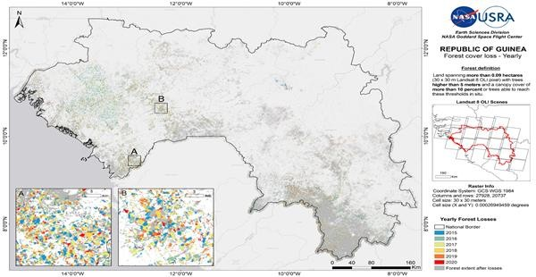
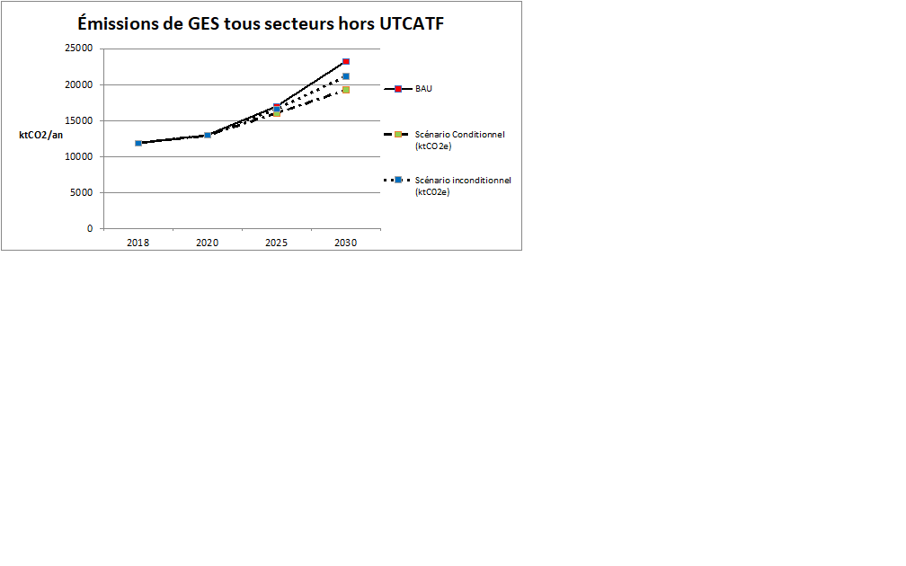
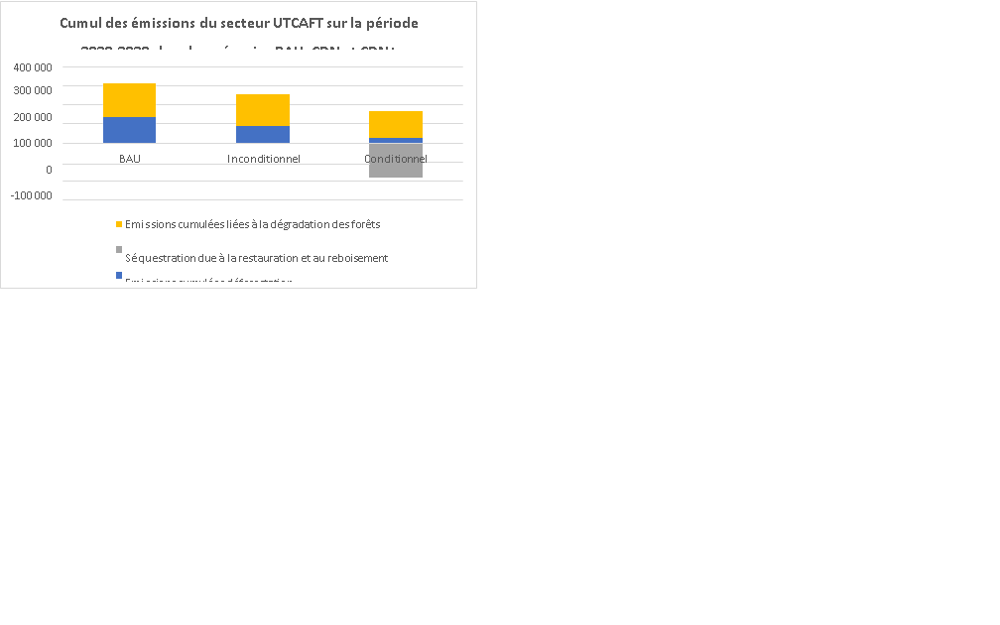

Contribution Déterminée au niveau
National (CDN) de la République de Guinée
2021
Juillet 2021
|
AP |
Accord de Paris |
|
BAU |
Business As Usual |
|
BMD |
Banque Multilatérale de Développement |
|
BSD |
Bureau de Stratégie et de Développement |
|
CCNUCC |
Convention Cadre des Nations Unies sur les Changements Climatiques |
|
CDMT |
Cadre de Dépenses à Moyen Terme |
|
CDN |
Contribution Déterminée au Niveau national |
|
CEDEAO |
Communauté Economique des Etats d’Afrique de l’Ouest |
|
CEES |
Conseil Economique, Environnemental et Social |
|
CNCC |
Comité National Changement Climatique |
|
CNI |
Communication Nationale Initiale |
|
COP |
Conférence des Parties |
|
CPDN |
Contribution Prévue Déterminée au niveau National |
|
CS-CDN |
Comité de Suivi Contribution Déterminée au niveau National |
|
DNPNCC |
Direction Nationale Pollutions, Nuisances et Changements Climatiques |
|
EBT |
Evaluation des Besoins Technologiques |
|
ELEP |
Enquête Légère pour l'Evaluation de la Pauvreté |
|
FAO |
Organisation des Nations Unies pour l'alimentation et l'agriculture |
|
FMI |
Fonds Monétaire International |
|
FNPG |
Fonds National pour la Promotion du Genre |
|
FONAEF |
Fonds National d'Appui aux Activités Economiques des Femmes |
|
GES |
Gaz à Effet de Serre |
|
GIRE |
Gestion Intégrée des Ressources en Eau |
|
GIZC |
Gestion Intégrée de la Zone Côtière |
|
IGES |
Inventaire de Gaz a Effet de Serre |
|
INS |
Institut National de la Statistique |
|
IRENA |
International Renewable Energy Agency |
|
LPDSE |
Lettre Politique de Développement du Secteur de l'Energie |
|
MEEF |
Ministère de l'Environnement, des Eaux et Forêts |
|
OCDE |
Organisation de Coopération et de Développement Economiques |
|
ODD |
Objectif de Développement Durable |
|
PAI |
Programme Annuel d'Investissement |
|
PANA |
Plan d'Action National pour l'Adaptation |
|
PDL |
Plan de Développement Local |
|
PIB |
Produit Intérieur Brut |
|
PMA |
Pays les Moins Avancés |
|
PNA |
Plan National d'Adaptation |
|
PNCCC |
Plateforme Nationale de Concertation sur le Changement Climatique |
|
PNDES |
Plan National de Développement Economique et Social |
|
PNE |
Politique Nationale de l'Environnement |
|
PNUD |
Programme des Nations Unies pour le Développement |
|
PV |
Photovoltaïque |
|
RGPH |
Recensement Général de la Population et de l'Habitat |
|
SCN |
Seconde Communication Nationale |
|
SDAM |
Schéma Directeur d'Aménagement de la Mangrove |
|
SE4ALL |
Sustainable Energy for All |
|
SIE |
Système d'Information Energétique |
|
SIGPIP |
Système Intégré de Gestion du Programme d’Investissements Publics |
|
SNCC |
Stratégie Nationale sur le Changement Climatique |
|
SNDD |
Stratégie Nationale de Développement Durable |
|
TCN |
Troisième Communication Nationale |
|
UE |
Union Européenne |
|
UNEP |
United Nations Environment Programme |
|
UTCATF |
Utilisation des Terres, Changement d'Affectation des Terres et Foresterie |
|
WWF |
World Wildlife Fund |
|
Eléments de compréhension de la CDN 2021 |
|
|
Evolutions de la CDN par rapport à 2015 |
La République de Guinée a tâché d’améliorer la conformité de la section atténuation de sa CDN actualisée avec les dispositions de l’Accord de Paris et du Livre des règles (Décision 4/CMA/2018/3/Add.1). Sont précisées, en particulier:
|
|
Objectif du document |
Révision de la CDN de 2015 dans le respect des dispositions de l’Accord de Paris et en intégrant les enjeux transversaux genre / ODD. Actualisation de la situation de référence à la faveur des données du 3ème IGES et d’une étude sur le niveau de référence des émissions du secteur forestier. Révision des objectifs d’atténuation inconditionnels et conditionnels ; inclusion d’objectifs sur le secteur UTCAFT |
|
Situation de la République de Guinée |
|
|
Circonstances nationales |
Population 2019 : 12,22 millions1 Taux de croissance du PIB 20202: 7%3 Part du secteur agricole dans le PIB : 24,26%4 Incidence de la pauvreté : 43,7% en 20195 Objectif :Passer de “Pays Moins Avancé” à “Pays Émergent" d’ici 2040 Climat : tropical humide, alternance de saisons sèches et pluvieuses de durées inégales. Pluviométrie moyenne : 1988 mm par an Part de la Guinée dans les émissions globales de GES : <0,1%6 Émissions de GES par habitant (hors UTCAFT): 1 teqCO2 (2020) |
|
Conditions de mise en œuvre |
Mise en œuvre des mesures sectorielles à travers le Plan National de Développement Economique et Social (PNDES 2021-2025 en cours d’élaboration). Pilotage de la mise en œuvre par le Ministère du Plan et le Ministère de l’Environnement, des Eaux et Forêts, sur les orientations du Comité National Changement climatique et en coordination avec le Dispositif institutionnel de suivi- évaluation du PNDES Suivi opérationnel de la mise en œuvre et évaluation des progrès accomplis dans le respect des dispositions du cadre de transparence par la Direction Nationale Pollutions, Nuisances et Changements Climatiques (DNPNCC). La création d’une agence nationale du climat, de l’environnement et du développement durable est envisagée. |
|
Documents de référence |
“Guinée Vision 2040” (2016) Plan National de Développement Économique et Social (PNDES 2016-2020) Politique Nationale de l’Environnement (PNE Edition 2016) Stratégie Nationale de Développement Durable (SNDD-2019) Stratégie Nationale sur le Changement Climatique (SNCC-2019) Politique Nationale de l’Eau (2018) Codes de l’Environnement, de l’Eau, de l’Elevage, Forestier, Minier Communication Nationale Initiale (CNI-2002) Plan d’Action National pour l’Adaptation (PANA-2007) Contribution Prévue Déterminée au niveau National (CPDN-2015) 3ème Inventaire de gaz à effet de serre (2021) Évaluation des Besoins Technologiques (EBT-2019) |
|
Volet Atténuation |
|
|
Année de référence |
2020, sur la base de données actualisées et projetées du 3ème inventaire de gaz à effet de serre (année de référence 2018) |
|
Période d’engagement |
2020-2030 |
|
GES pris en compte |
CO2, CH4, N2O |
|
Secteurs d’émissions couverts |
Energie, Procédés industriels, Agriculture, Utilisation des terres, Changement d’Affectation des Terres et Foresterie, transports, déchets |
|
Type d’objectifs |
Déviation par rapport à une pratique courante (BAU) pour chacun des secteurs concernés. Réduction inconditionnelle des émissions par rapport à un scénario BAU et suivant l’année de référence. Réduction conditionnelle des émissions des émissions par rapport à un scénario BAU et suivant l’année de référence. |
|
Objectifs sectoriels |
Energie (production d’électricité) :
Transports :
Mines :
Déchets :
UTCAFT : Biocombustibles :
Déforestation :
Restauration :
|
|
Niveau d’atténuation estimé |
Hors UTCAFT, la République de Guinée établit son objectif inconditionnel (CDN) à 2 056 ktCO2eq/an soit 9,7% de réduction de ses émissions en 2030 par rapport au scenario tendanciel, soit une croissance des émissions de 5% par an sur la période 2020-2030. L’objectif conditionnel (CDN+) s’établit à 3929 ktCO2 eq/an, soit 17,0% par rapport au scenario tendanciel, soit une croissance des émissions de 4% par an sur la période 2020-2030. Sur UTCAFT, hors actions de reboisement (absorptions non prises en compte), la République de Guinée établit son objectif inconditionnel (CDN) à 20% de réduction de ses émissions brutes en 2030 par rapport au scenario tendanciel. L’objectif conditionnel (CDN+) s’établit à 49% par rapport au scenario tendanciel. |
|
Coûts de mise en œuvre des engagements |
Au moins 13,8 milliards USD La République de Guinée conditionne une partie de sa contribution (CDN+) à la mobilisation de moyens de financement comptabilisables au titre du Mécanisme financier de la Convention. |
|
Volet Adaptation |
|
|
Manifestations du changement climatique (horizon 2030) |
Hausse des températures moyennes Tendance à la légère augmentation de la pluviométrie moyenne annuelle mais marquée par une variabilité interannuelle et intra-annuelle accrue. Elévation du niveau de la mer et recul du trait de côte |
|
Domaines couverts |
Ressources en eau / Zone côtière et économie bleue / Agriculture, élevage et secteur forestier |
|
Estimation des coûts de l’adaptation |
Estimation macroéconomique : [713-1922] millions USD Estimation des mesures incluses dans la CDN : 1 milliard USD |
|
intention |
Les actions engagées sont dites “sans regrets” |
|
Documents-cadre pour la communication adaptation |
Communications Nationales et à partir de 2023, le Plan National d’Adaptation Rapports de transparence |
La République de Guinée a ratifié la Convention-cadre des Nations Unies sur les changements climatiques (CCNUCC) et le Protocole de Kyoto respectivement en 1993 et 2005. Elle a, depuis, élaboré des stratégies en matière de lutte contre les changements climatiques, parmi lesquelles sa Communication Nationale Initiale (CNI), sur la base d’un inventaire des gaz à effet de serre (IGES) en 2001 (sur la base des émissions de 1994), sa Seconde Communication Nationale (SCN) (sur la base des émissions de 2000). Enfin, la République de Guinée a élaboré son Plan d’Action National d’Adaptation aux changements climatiques (PANA) en 2007 et engagé plusieurs projets pour mettre en œuvre ce plan. Elle est par ailleurs actuellement engagée dans le processus d’élaboration de sa Troisième Communication nationale (TCN) et de son Plan National d’Adaptation (PNA), qui devraient respectivement être achevés en 2023 et 2024. Dans le cadre des travaux sur la TCN, un 3ème IGES a été élaboré au premier semestre 2021 et constitue le socle des données de référence de la révision de la CDN.
Cinq ans après son adoption à Paris lors de la COP21 de la Convention Cadre des Nations Unies sur les Changements Climatiques (CCNUCC), l'Accord de Paris (AP) sur le climat est devenu effectif en 2020. Alors que la science démontre avec régularité l’ampleur des efforts à fournir au niveau mondial pour respecter l’engagement collectif, la République de Guinée, après avoir ratifié l’Accord de Paris le 22 avril 2016, entend réaffirmer et renforcer son engagement à contribuer à la riposte mondiale contre la menace des changements climatiques à travers la révision de sa CDN soumise en 2015.
Figure SEQ Figure \* ARABIC1- Régions naturelles et préfectures de République de Guinée
Avec une superficie de 245 857 km², la République de Guinée a une population d'environ douze millions d’habitants, soit une densité de 48 habitants par km². Elle se caractérise par quatre grandes zones éco-climatiques : la Basse Guinée, la Moyenne Guinée, la Haute Guinée et la Guinée Forestière. Son réseau hydrographique est très dense, 1166 cours d’eau répartis en 23 bassins versants dont 14 internationaux. Elle jouit d'un climat tropical humide caractérisé par l'alternance de deux saisons de durées inégales : la saison sèche durant laquelle souffle l’harmattan et la saison pluvieuse régie par la mousson ouest africaine. La saison pluvieuse dure 5 à 7 mois (avril-octobre) du nord vers le sud ; il tombe une moyenne nationale de 1988 mm de précipitations par an, avec toutefois des écarts très importants en fonction de la latitude, de la topographie et de la continentalité (4000 mm à Conakry, 930 mm à Koundara)7.D’un point de vue administratif, le pays est subdivisé en 7 régions (Boké, Kindia, Mamou, Faranah, Kankan, Labé, Nzérékoré) et un Gouvernorat (Conakry), 33 Communes Urbaines et 304 Communautés Rurales de Développement.
Avec un IDH parmi les plus faibles du monde (178èmerang parmi 189 pays8),la République de Guinée doit faire face à deux défis majeurs : sortir sa population de la pauvreté et assurer la sécurité alimentaire du pays, alors que sa croissance démographique est de 2,7% par an (INS 2019) et que le nombre d’habitants devrait atteindre 16 millions en 2030 (RGPH 2014).
Tableau 1 : Données démographiques
|
Indicateurs |
Données (année de référence) |
Sources |
Moyenne CEDEAO |
|
Population |
12,21 millions habitants (2019) |
INS |
N/A |
|
Taux de croissance démographique |
2,7 % (2019) |
INS |
2,57 |
|
Densité |
51 km² (2018) |
BM |
99,6 |
|
Indice de développement humain (et rang) |
0,477 (178) |
PNUD (2019) |
0,506 |
|
Coefficient de GINI sur les inégalités de revenus |
33,7 (2012) |
BM |
39,7 |
|
Part de la population en dessous du seuil de pauvreté (et profondeur de la pauvreté) |
43,7% (12,5) (2019) |
INS |
N/A |
|
Urbain |
35,4% (9,6) |
||
|
|
64,7% (22,6) |
||
|
Taux d’alphabétisation |
32% (2014) |
INS |
|
|
Conakry |
62,5% |
||
|
Urbain |
55,4% |
||
|
Rural |
17,6% |
||
|
Espérance de vie à la naissance |
61,1 ans (2019) |
BM |
61,3 |
|
Homme |
60,5 ans (2019) |
59,8 |
|
|
Femme |
61,6 ans (2019) |
62,7 |
A travers son document de vision stratégique prospective « Guinée Vision 2040 », la République de Guinée a pour ambition de passer du statut de “Pays Moins Avancé” (PMA) à “Pays Émergent" d’ici à 2040, ce qui implique un taux de croissance du PIB à deux chiffres d’ici 2030, soutenu en particulier par une industrialisation pour la transformation des produits agricoles et des produits miniers. La République de Guinée dispose d’un potentiel économique important couvrant le secteur de l’agriculture, la pêche et celui des ressources minières et hydroélectriques. La Guinée possède plus du tiers des réserves mondiales de bauxite (40 milliards de tonnes d’une teneur supérieure à 40 %) et des réserves importantes d’or (plus de 700 tonnes)9. De plus, la République de Guinée détient les plus grands gisements inexploités de fer au monde (20 milliards de tonnes), avec un minerai de première qualité (teneur supérieure à 60%) ; et des réserves prouvées de diamant estimées à plus de 30 000 000 de carats, les réserves probables étant de plus de 500 000 000 de carats. Ce potentiel n’est, pour l’heure, que faiblement exploité et la croissance du PIB s’élevait à 6% en 2019. Cette même année, les secteurs de l’industrie et de l’agriculture représentaient respectivement 24% et 20% de la valeur du PIB.
Malgré la double crise sanitaire de 2020 (Ebola et Covid-19), la Guinée a connu une croissance économique de 7% en 2020, selon les récentes données du FMI, portée par les résultats obtenus par le secteur minier au cours de l’année avec une forte augmentation mondiale de la demande en bauxite. Malgré l’augmentation continue des exportations minières en 2020 -comme au cours des cinq dernières années avec une multiplication par 4 des tonnages exportés pour la bauxite-, les revenus tirés du secteur minier, qui représentent plus d’un tiers des recettes publiques10, n’ont pas augmenté, du fait de la baisse des prix de la bauxite. Notons toutefois que les prévisions de croissance pour l’année 2021 sont moins optimistes (5,2%) du fait des répercussions de la crise sanitaire sur les autres secteurs de l’économie guinéenne. La croissance réelle devrait continuer d’être forte ces prochaines années (croissance estimée en 2022 de 6,1%11), soutenue par une expansion robuste et continue du secteur minier, voire plus rapide que prévu, et consolidée par une reprise progressive de l’économie non minière.
Compte tenu de ces ambitions et de la croissance démographique, les besoins énergétiques de la République de Guinée vont doubler en l’espace de 20 ans. Pour autant, comme le souligne le document de prospective Guinée Vision 2040, « ce destin doit s’accomplir dans le respect d’un environnement protégé qui sécurise l’avenir des générations futures”. Les engagements de réduction d’émissions de GES de la CDN sont donc le reflet de stratégies et plans sectoriels nationaux déjà adoptés au niveau national (Accord de Paris, Art.4.4), mais qui nécessitent la mobilisation urgente de moyens massifs pour une mise en œuvre rapide et des résultats durables.
Le processus de préparation de la CDN a démarré en novembre 2019 avec l’appui du PNUD à travers un atelier impliquant largement les Ministères, la Société Civile et les Partenaires Techniques et Financiers qui ont validé le principe d’un processus de révision. Sous le pilotage de la Direction Nationale des Pollutions, Nuisances et Changement Climatique (DNPNCC) au sein du Ministère de l’Environnement, des Eaux et Forêts (MEEF) et avec l’appui de la Promesse climatique du PNUD, le chantier a démarré au premier semestre 2020 avec d’une part la réalisation d’un état des lieux de la mise en œuvre des engagements de la CDN de 2015 avec l’appui financier de la Banque Africaine de Développement, et d’autre part la mobilisation d’une équipe d’experts pour la révision de la CDN lancée officiellement en juillet 2020 pour se conformer aux dispositions de la Décision 1/CP.21 §24. Le contexte sanitaire de la Covid-19 a fortement contraint les autorités impliquées avec une grande partie des ateliers et réunions de préparations organisées par visioconférence. Toutefois, afin d’assurer une concertation élargie auprès des acteurs nationaux, notamment pour collecter des données et en vue de fixer le cap d’ambition, ont été organisés :
Une enquête en ligne afin de « prendre le pouls de la société guinéenne sur son ressenti du changement climatique, le niveau de connaissance de l’Accord de Paris, de la CDN et l’opinion sur les mesures prises (ou à prendre) en République de Guinée sur les volets atténuation et adaptation. » ;
Sept ateliers de consultation pour la révision de la CDN-Guinée, convoqués par la lettre N°679/MEEF/2020 en date du 20 août 2020 dans les capitales régionales ont été tenus du 24 août au 07 septembre 2020. La jauge restreinte pour l’organisation de ces ateliers a toutefois été une contrainte pour une large mobilisation de la société civile.
La mobilisation d’un Comité d’orientation stratégique incluant 10 Ministères sectoriels, dont leurs points focaux Genre& Equité, ainsi que des représentants de la société civile a permis de valider le rapport diagnostic en vue de la révision de la CDN, les orientations pour la construction des scénarios et la validation de la CDN provisoire, y compris sur la structure du document en conformité avec les dispositions du Livre des Règles.
La tenue d’un premier atelier national de validation le 11 décembre 2020.
A la faveur des nouvelles données disponibles annoncées pour le 1er semestre 2021, et d’une ambition réaffirmée de l’Etat Guinéen, une nouvelle révision de la CDN a été opérée avec le soutien de la Banque Mondiale et a conduit à la réalisation des dernières activités suivantes :
La tenue d’un atelier national de validation le 21 juillet 2021 et qui a rassemblé près de 80 participants (Ministères, Instituts de recherche, société civile, secteur privé et Partenaires Techniques et Financiers).
La soumission de la CDN validée en Conseil des Ministres et l’information de l’Assemblée Nationale
La soumission sur le registre provisoire CDN administré par le Secrétariat de la CCNUCC.
Ce processus de concertation sera reconduit lors de la préparation du 2nd cycle de CDN (Accord de Paris, Art.4.9) avec toutefois trois évolutions à venir :
Un ancrage sur l’architecture institutionnelle de mise en œuvre et de suivi de la CDN en cours d’évolution et qui sera consolidée à travers le chantier sur le plan de partenariat et d’investissement ;
Une participation élargie de la société civile et du secteur privé notamment dans la phase de diagnostic sur le niveau de réalisation des engagements.
La prise en compte des résultats du bilan global, conformément à l’article 4, §9, de l’AP, afin de présenter le plus haut niveau d’ambition possible lors des prochains cycles de CDN.
Les engagements sectoriels pris au titre de la CDN seront mis en œuvre à travers le Plan national de développement économique et social (PNDES) 2021-2025 et 2026-2030, principal outil de planification de la République de Guinée, sous pilotage du Ministère du Plan et en étroite collaboration avec le Ministère de l’Environnement, des Eaux et Forêts. Dans le cadre du NDC Partnership et avec le soutien de la Banque Mondiale, un plan d’investissement des actions prises au titre de la CDN est en cours d’élaboration en tenant compte des investissements prévus au titre du budget national et du budget des collectivités territoriales (engagements inconditionnels), et sera assorti d’un plan de partenariat destiné à mobiliser les partenaires financiers et le secteur privé (budget conditionnel). Les mesures transversales d’appui à la mise en œuvre et à la mise en conformité avec le cadre de transparence de l’Accord de Paris feront l’objet d’un pilotage budgétaire spécifique par le Ministère de l’environnement, des eaux et des forêts ; l’appui des partenaires techniques et financiers pour l’application de ces mesures transversales, y compris la mise en application de l’évolution de l’architecture institutionnelle cible est sollicité.
La République de Guinée, en tant que membre de la Communauté Economique des Etats d’Afrique de l’Ouest (CEDEAO), applique les directives et règlements communautaires dans les domaines ciblés par sa CDN (ressources en eau partagées, accès aux services énergétiques, accroissement de la productivité agricole régionale, etc.). Elle participe également aux initiatives en cours au sein de la Commission de la CEDEAO pour contribuer à harmoniser le cadre de suivi des flux financiers climat dans l’espace régional, pour une meilleure comparabilité et une action climat renforcée. A ce jour, la République de Guinée fixe cependant son niveau d’effort en application de l’article 4,§2, de l’Accord de Paris, de façon indépendante et non concertée avec les autres Etats-membres (article 4, §16-18, de l'Accord de Paris).
Lors de l’établissement de la première CDN en 2015, aucune ligne directrice ni règle spécifique n’avait été édictée pour harmoniser les engagements des pays Parties et ainsi les rendre comparables. Tout comme les autres pays, la République de Guinée a donc fait certains choix en termes de contenu et de format. Les dispositions du Livre des règles, adoptés lors de la COP24 et la COP25 ne s’appliqueront qu’en 2024, pour le second cycle de CDN, mais les pays sont invités à tenir compte, autant que faire se peut, desdites dispositions dès l’actualisation de leur CDN en 2020 (Décision 4/CMA.1 §7). Pour la CDN révisée en 2021, la République de Guinée souhaite commencer à se rapprocher des dispositions qui deviendront obligatoires à partir de 2024, destinées à renforcer la transparence et la confiance des Parties. Ainsi, la République de Guinée a tâché d’améliorer la conformité de la section atténuation de sa CDN actualisée avec les dispositions de l’Accord de Paris et du Livre des règles (Décision 4/CMA/2018/3/Add.1)). Pour ce faire, la CDN actualisée précise, en particulier:
Les informations chiffrables sur le point de référence de la ou des cibles, y compris une année de référence.
Les calendriers et/ou périodes de mise en œuvre, la portée et le champ d’application, les processus de planification.
Les hypothèses et les démarches méthodologiques utilisées, notamment pour estimer et comptabiliser les émissions de GES.
Les explications pour dire en quoi la CDN est équitable et ambitieuse, et comment elle contribue à l’objectif de 2°C.
Une meilleure documentation des données permettant d’établir la situation de base en matière d’émissions de GES et des hypothèses retenues pour la construction des scénarios.
La définition d’indicateurs sectoriels et de cibles chiffrées pour l’ensemble des engagements pris.
En tant que PMA, d’importants défis restent prégnants pour la République de Guinée afin d’appliquer l’ensemble des dispositions prévues (Décision 1/CP.21, § 31). Cela concerne en particulier la situation de référence du secteur UTCAFT avec le besoin urgent de réaliser un nouvel inventaire forestier pour évaluer précisément la capacité actuelle de séquestration des forêts guinéennes, mais également la réalisation d’une étude approfondie des vecteurs de déforestation. La République de Guinée requiert à cette fin le soutien de la communauté internationale pour renforcer ses capacités (Accord de Paris, Art.11.3).
La République de Guinée s’engage dans une amélioration continue de son cadre de transparence, de façon à être en capacité de rédiger son premier rapport biennal sur la transparence et son rapport national d’inventaire, au plus tard d’ici au 31 décembre 2024 (Décision 18/CMA.1 §3). Plusieurs progrès majeurs ont été accomplis ces dernières années et permettent déjà de mieux structurer le cadre de transparence de la République de Guinée, notamment grâce aux résultats de la Loi statistique de 2014 et la publication régulières des annuaires statistiques édités par l’Institut Nationale des Statistiques. Plus récemment, l’année 2020 est marquée par le démarrage du Système Intégré de Gestion du Programme d’Investissements Publics (SIGPIP) qui doit pallier les faiblesses soulignées par plusieurs audits du suivi-évaluation des investissements publics, y compris en matière de lutte contre les changements climatiques. Enfin, la République de Guinée conduit actuellement, dans le cadre de l’élaboration de sa TCN, un processus d’amélioration du système d’IGES et des compétences de l’équipe en charge ; cette amélioration s’accompagne également en 2020 de l’émergence d’un réseau de points focaux climat /référents climatiques au sein des Ministères sectoriels dont le mandat est, entre autres, de contribuer à collecter des données en vue de la réalisation des inventaires de GES. Toutefois plusieurs défis urgents restent à surmonter avec le soutien de la communauté internationale :
Le renforcement du dispositif de réalisation et de mise à jour des inventaires nationaux de GES ;
La refonte du cadre institutionnel de pilotage, mise en œuvre et suivi de l’action climat et des engagements pris au titre de la CDN ;
La mise en place d’un cadre juridique sur le climat permettant de rendre ce dispositif plus robuste et mieux coordonné ;
La consolidation et le renforcement du dispositif de suivi et d’évaluation ex post des engagements pris au titre de la CDN : la CDN révisée de 2021 intègre des indicateurs et des cibles précises pour chaque engagement. Toutefois, il n’existe pas encore à ce jour de dispositif de suivi-évaluation robuste et centralisé pour la CDN de la République de Guinée et celui-ci reste à construire, en l’adossant au suivi de la réalisation du PNDES.
L’établissement du dispositif de suivi de l’appui reçu au titre de la CDN (Section I de la Partie VI de l’Annexe de la Décision 18/CMA.1) : d’importants effort de définition de la nature des financements suivis, de référencement dans les systèmes d’information et de gestion budgétaire et de coordination devront être menés pour que la République de Guinée soit en mesure de respecter ces obligations.
La mise en cohérence des politiques publiques sur l’action climat, et l’intégration transversale des objectifs de la CDN dans l’ensemble des politiques publiques et stratégies sectorielles concernées.
Avec un indice de genre de 0.439 (SIGI Index OCDE), la Guinée se trouve parmi les 8 pays (78 sur 86) ayant les plus grandes disparités entre les femmes et les hommes dans l’espace non-OCDE. D’après la Banque Mondiale12, la réduction des inégalités entre les genres en République de Guinée pourrait potentiellement accélérer la croissance du PIB par habitant de 0,6 point de pourcentage par an ou de 10,2 % au total d’ici 2035. Au-delà du fait que cet accroissement de PIB est de nature à renforcer de manière générale les capacités d’adaptation, l’intégration genre dans les mesures d’adaptation et d’atténuation de la CDN est une priorité compte tenu des tâches généralement dévolues aux femmes dans le foyer, de leur surreprésentation dans les secteurs les plus impactés par le changement climatique (agriculture, élevage et pêche) mais également de leur faible représentation dans les instances décisionnelles. Cette priorité se retrouve d’ailleurs soulignée dans le PNDES (2016-2020).
Les mesures d’atténuation et d’adaptation de la CDN sont toutes de nature à améliorer de façon prioritaire les capacités d’adaptation et la résilience des femmes et populations vulnérables de Guinée. Pour cibler prioritairement ces groupes, quatre actions transversales sont prioritaires: (i) la dotation en moyens de fonctionnement suffisants des services “Genre et Équité" créés en 2015 dans tous les ministères13, (ii) l’intégration des enjeux d’adaptation et d’atténuation dans les moyens dédiés au Fonds national d’appui aux activités économiques des femmes (FONAEF) et au Fonds national pour la promotion du genre (FNPG), (iii) l’application effective de la loi sur la parité adoptée le 2 mai 2019 selon laquelle les femmes doivent constituer 50% des listes électorales, (iv) la mise en place de formations techniques adéquates en lien avec les changements climatiques pour les jeunes, femmes et personnes à mobilité réduite.
En outre, des indicateurs de suivi, de résultat et d’impact sexo-spécifiques sont explicitement mentionnés dans les mesures d’adaptation et d’atténuation de la CDN et ont pour objectif de favoriser la solide intégration genre dans la planification des politiques publiques, et d’en tirer les conclusions nécessaires sur leurs éventuels effets différenciés. Les indicateurs d’impact mesurent à la fois le niveau de vie (prévalence de la pauvreté, taux de malnutrition) et la qualité de vie (accès aux infrastructures d’eau et d’assainissement) des femmes. Les indicateurs de suivi et de résultats visent, quant à eux, à renforcer leur autonomie et leur place dans les instances décisionnaires (amélioration des compétences, formation à des activités génératrices de revenus, intégration dans les comités de gestion des conflits pastoraux).
L’année de référence de la CDN 2021 est 2018, base du 3ème inventaire de gaz à effet de serre (IGES) réalisé en 2021 en vue de la publication de la Troisième communication nationale (TCN). Les secteurs pris en compte dans le 3ème IGES sont les suivants : énergie, déchets, agriculture, industries dont mines, ménages et transports. Pour estimer les émissions du secteur UTCAFT, le Niveau de Référence d’Emission des Forêts (NERF) a été calculé.
Tableau 2 :Emissions nationales de la République de Guinée en kTCO2eq UTCAFT d’après le 3ème IGES et le NERF
|
Emissions nationales de la République de Guinée en ktCO2eq d’après le 3ème IGES et le NERF |
||
|
Secteur |
Emissions en 2018 en ktCO2 (TCN) |
Emissions en 2020 en KtCO2 (TCN) |
|
Energie |
3 863 |
4475 |
|
- Electricité |
295 |
357 |
|
- Industrie dont mines |
1 192 |
1 441 |
|
- Transport |
2 155 |
2 421 |
|
- Ménages |
4 |
5 |
|
- Autres gaz provenant de la combustion énergétique |
217 |
251 |
|
Déchets |
298 |
317 |
|
Agriculture |
7 537 |
7 996 |
|
Processus industriels |
136 |
153 |
|
Total (sans UTCAFT) |
11 834 |
12 940 |
|
Secteur |
Emissions brutes tCO2eq/an (NERF, 2020) |
|
|
UTCAFT (biocombustibles inclus, absorption exclus) |
- |
33 587 |
|
Total (avec UTCAFT) |
46 527 |
|
Le secteur énergie comptabilise les émissions liées aux secteurs suivants : production d’électricité, industries dont mines, transport, ménages et autres gaz provenant de la combustion énergétique. Les chiffres des émissions sont issus du 3ème IGES : en 2018, les émissions liées au secteur énergie étaient de 3 863 ktCO2 eq ; selon les projections réalisées, les émissions de 2020 du secteur s’élèvent à 4 475 ktCO2 eq
Le profil de consommation d’énergie montre ainsi la part croissante des énergies fossiles dans le mix énergétique. La croissance de la consommation d’énergies fossiles est plus rapide en raison de la croissance constatée dans certains secteurs, notamment le transport routier et les procédés industriels et miniers.
Production d’électricité
En 2018, 45% des ménages guinéens avait accès à l’électricité14. Il convient de souligner que le taux d’accès à l’électricité en 2013 était seulement de 18,1%, ce qui traduit une récente forte augmentation grâce à la mise en service du barrage de Kaléta (2015). Ces progrès devraient encore nettement s’accélérer avec la mise en service récente du barrage de Souapiti, dont la capacité de 450 mégawatts (MW) permettra, à terme, de quasiment doubler la puissance électrique installée. Les disparités entre zones urbaines et zones rurales sont très fortes : en milieu rural (deux tiers de la population du pays) seuls 22,8 % des ménages ont accès à l’électricité contre 86,7 % en milieu urbain15. La Guinée présente encore un déficit de production électrique croissant sous l’effet conjugué d’une augmentation rapide de la demande (qui devrait encore s’accélérer dans les années à venir avec le développement prévu de sites miniers d’importance majeure) et d’une progression relativement lente de l’offre compte tenu de l’ampleur des investissements à réaliser. Au total, la capacité installée est estimée à environ 562 MW dont 65% en hydroélectricité et 35% en thermique pour une consommation totale de 1 182 MWh d’origine hydroélectrique et 732 MWh d’origine thermique en 2018. D’après les estimations de croissance de la consommation, celle-ci pourrait atteindre 6 000 MWh en 2030. Le secteur minier constitue la principale source industrielle de demande en électricité. La Guinée dispose d’un important potentiel hydroélectrique estimé à plus de 6 000 MW (dont à ce jour environ 12% est valorisé) ainsi que d’un potentiel solaire conséquent (4,8 Kwhm²/jour).
Les autorités entendent concrétiser ce potentiel à travers le PNDES (2021-2025), la Lettre de Politique de Développement du secteur de l’Energie (LPDSE), la Déclaration de Politique Générale et le Plan d’Action 2009-2025. A cet égard, l’option stratégique du PNDES est de contribuer à la promotion d’un modèle de développement énergétique durable, basé pour l’essentiel sur l’équité sociale et régionale, les énergies renouvelables et la maîtrise environnementale des processus de production et de consommation énergétique.
Traduite en termes de priorités, cette option stratégique implique (i) la remise en état de l’appareil de production et de distribution du sous-secteur de l’électricité, (ii) la réforme de son cadre institutionnel, (iii) la mobilisation du potentiel hydroélectrique guinéen, notamment les grandes et les micro/mini centrales, (iv) la promotion des solutions « décentralisées » impliquant les collectivités locales et le secteur privé au niveau rural, (v) la promotion de solutions de préservation des ressources naturelles, (vi) le recours aux techniques innovantes telles que les digesteurs à biogaz (DAB), (vii) la satisfaction des besoins des zones rurales et périurbaines pour la mise en œuvre d’un programme d’accès aux services énergétiques, conformément aux objectifs de la politique d’énergie renouvelable (PERC) et à la politique d’efficacité énergétique de la CEDEAO (PEEC).
Le PNDES prévoit à ce titre : (i) la réalisation de plusieurs grands projets hydroélectriques ; (ii) la poursuite et le parachèvement des réformes structurelles institutionnelles engagées dans le secteur tant au niveau central qu’au niveau décentralisé (y compris la mise en place de cadre légal et réglementaire approprié et rétablissement de l’équilibre financier de l’EDG) ; (iii) l’électrification des localités rurales ; (iv) les extensions de réseau dans les zones périurbaines ; (iv) la diversification des sources d’énergies en privilégiant les énergies renouvelables, notamment les microcentrales hydroélectriques, l’énergie solaire et éolienne, la biomasse et les combustibles domestiques ; (v) la participation au processus d’interconnexion des réseaux électriques sous-régionaux.
Processus industriels
Malgré une conjoncture internationale difficile, les réformes engagées ont permis un regain d’investissements dans le secteur de la bauxite et de l’or. La région bauxitique du nord-ouest de Boké est dans une dynamique de développement sans précédent. Les investissements globaux dans les projets miniers pourraient atteindre 50 milliards USD dans la prochaine décennie..
En trois ans, la production de bauxite est ainsi passée de 20,2 millions de tonnes (Mt) en 2014 à 87,7 Mt en 2020, soit une augmentation de 334% sur la période16. Les perspectives de production sur les prochaines années s’inscrivent dans la même tendance. Selon une étude de CM Group en 2018, à l’horizon 2023, la Guinée fournirait 32% de la production mondiale de bauxite (contre environ 16% en 2018).
Le rapport Sustainably Growing Guinea’s Bauxite-Aluminium Industry de 2019 estime que les émissions de CO2 pourraient s’envoler avec la croissance du secteur et le développement des activités de raffinerie. De fait, la production d’une tonne d’aluminium peut émettre de 1,7 tonne à 23 tonnes de CO2 en fonction de l’énergie utilisée lors des procédés, en particulier lors de la fusion en aluminium17. Le développement du raffinement de l’alumine et de la fusion de l’aluminium sont donc susceptibles d’augmenter très fortement la demande en électricité du pays et les émissions de CO2 si les capacités ne sont pas installées à travers des énergies renouvelables.
De plus, la République de Guinée dispose des plus grandes réserves mondiales de fer inexploitées, estimées à plus de 20 milliards de tonnes et d’une qualité exceptionnelle (teneur en fer supérieur à 60%). Les lots Simandou 1 & 2 ont été attribués en novembre 2020 au consortium SMB Winning avec signature des conventions et ratifications par le parlement. Cette réattribution rend possible sur la période 2020-2030 la mise en exploitation de ce gigantesque potentiel minier.
Le programme de développement des mines18 prévoit à l’horizon 2030 une production de bauxite à hauteur de 150 millions de tonnes par an (MTPA), et la valorisation des gisements de fer pour environ 140 MTPA.
L’activité des sites miniers pourrait ainsi émettre environ 5 880 kTCO2 par an en 2030 dans le scénario BAU19, émissions auxquelles s’ajouteront :
les transports depuis les mines jusqu’aux ports, essentiellement par voie ferroviaire en 2030,
les opérations portuaires,
les combustibles de soutes
les unités de transformation de bauxite pour 500,000 T par an d’alumine.
Le quatrième pilier du Programme de Développement du Secteur Minier (PDSM) a pour objectif que le capital naturel touché par le secteur minier soit préservé grâce aux objectifs spécifiques suivants : (i) technologies propres dans l’industrie minière implantée, (ii) protection de la diversité biologique dans les zones minières accrues, (iii) évaluation/gestion de risques des catastrophes systématisée. Il ne comprend donc pas de stratégie d’atténuation du changement climatique ni d’objectifs de réduction d’émissions. La croissance forte du secteur, qui dépasse les scénarios envisagés en 2015, nécessite donc une démarche de concertation avec les acteurs pour favoriser un développement durable.
Transports
Les données du secteur des transports ont été actualisées à travers le 3ème IGES. Ce sous-secteur est la principale source de consommation d’énergies fossiles en Guinée engendrant des émissions de 2 155 ktCO2eq en 2018. S’agissant des infrastructures et services des autres modes de transports, le PNDES se fonde sur une approche multimodale du développement des transports, intégrée à la sphère de production agricole et d’exploitation minière. En particulier, plusieurs projets de réhabilitation et de construction de lignes ferroviaires sont identifiés et financés par le secteur privé ; il s’agit en particulier de :
- Le « Transguinéen » d’environ 650 km avec un coût de 5,5 milliards USD, reliant la mine de Simandou au futur port en eau profonde de Matakang d’une capacité de 80 MT par an (MTPA) ; construit par SMB-Winning ;
Mont Nimba – Libéria, 50 km, à partir de 2025, par SMFG ;
Dapilon à Santou, 112 km, en 2022 par SMB ;
Télimélé à Boffa, 120 km, en 2025, par TBEA ;
Gaoual à Kamsar, 120 km, par Alliance Mining Promoted (étude de faisabilité, pour mise en service avant 2030) ;
Mamou à Port de Benty, 270 km, par Anglo-AfricanMinerals (mise en service avant 2030).
Ces lignes ferroviaires représentent un potentiel de 151 MT.km/jour de minerais transportés en 2025 et 193 MT.km/jour en 2030.
Le Plan de Déplacements Urbains (PDU) de Conakry prévoit également dans son scénario privilégié intégré le développement de :
Une ligne BRT Le Prince Kaloum / Sonfonya par corniche de 33,5km.
Une ligne HRT Kaloum / Kagbelen de 33,5 km.
Ces travaux sont estimés à un coût de 422 millions d’euros d’ici 2030 pour un bilan cumulé d’atténuation de -919 ktC02eq d'ici 2030.
Le 3ème IGES estime les émissions du secteur agricole à 7 537 ktCO2 eq en 2018 (soit environ 63% du total hors UTCAFT). Il convient de mentionner que les émissions dues au brûlis sont considérables et représentent la première source de déforestation mais sont comptabilisées dans le secteur UTCATF. Le tableau suivant montre les émissions du secteur agricole tous GES confondus selon les pratiques émettrices. Le vecteur principal d’émission est l’élevage pour 71,5% (en raison des différents modes de gestion de déjections et de fermentation entérique)
Tableau 3 :Emissions moyennes du secteur agricole sur la période en 2018 et 2020 , tous GES confondus en kTCO2eq (Source : 3ème IGES)
|
Poste d'émissions |
Niveau d'émissions en moyenne en 2018 (3ème IGES) en kTCO2eq |
Part du poste d’émissions / total secteur agricole |
Niveau d’émissions en moyenne en 2020 en kTCO2eq |
Part du poste d’émissions/ total du secteur agricole |
|
Fermentation entérique |
5 215 |
69,2% |
5 532 |
69,2% |
|
Gestion du fumier |
172 |
2,3% |
182 |
2,3% |
|
Culture du riz |
0 |
0% |
0 |
0% |
|
N2O provenant des sols agricoles |
2 105 |
27,9% |
2 233 |
27,9% |
|
Brûlage de résidus agricoles |
43 |
0,6% |
46 |
0,6% |
|
Total |
7 535 |
100% |
7 993 |
100% |
En l’absence de données précises, les émissions dues à la riziculture n’ont pas été évaluées dans la TCN mais méritent d’être étudiées de manière spécifique car elles représentent un potentiel d’atténuation intéressant grâce à l’amélioration des pratiques.
Sur la période 2013-2018, les superficies cultivées des principales filières vivrières ont cru d’environ 4% par an en moyenne, atteignant 4,4 Mha en 201820. L’élevage a aussi connu une croissance supérieure à 5% par an tous cheptels confondus. L’hypothèse retenue est que les émissions agricoles continueront à croître de 6% par an en moyenne. En 2020, se basant sur l’année de référence de 2018, les émissions sont estimées à 7 993 kTCO2eq.
Des orientations stratégiques claires devront être proposées dans les prochaines CDN afin d’accélérer la transition vers une agriculture sans abattis-brûlis, une riziculture maîtrisée, et une utilisation efficiente des résidus agricoles. Toutefois, aucun engagement quantifié ne figure sur ce secteur dans la CDN de 2021, compte tenu des enjeux prioritaires de sécurité alimentaire du pays. Un inventaire plus précis des émissions du secteur et l’évaluation et la priorisation des mesures d’atténuations potentielles est une priorité pour anticiper les prochains engagements du pays pour ce secteur stratégique et très émetteur.
Les émissions liées au secteur des déchets sont de 298 ktCO2eq en 2018 avec une croissance de 3% d’ici à 2030.
Jusqu’à présent les déchets solides ne sont pas traités dans le pays, y compris dans les plus grandes villes, générant un manque à gagner important en termes de santé, d’environnement et d’économie.
Un projet d’envergure est cependant à l’étude pour collecter les déchets de Conakry et les valoriser sous forme d’électricité à partir de la combustion du méthane. Ce projet prévoit la collecte de 1740 ktonnes de déchets traités cumulés d’ici 2025 et 4148 ktonnes cumulées d’ici 2030. Cela permettrait d’éviter environ 110 kt CO2eq/an à horizon 2030, et un cumul de plus de 900 kt CO2eq d’ici là (Bilan Carbone du projet).
Les émissions liées à la déforestation, à la dégradation et à la gestion des forêts ont été estimées par une approche et des méthodes conformes à la mise en place de Niveau de Référence d’émission des Forêts (NERF) dans le cadre du programme REDD+ de la CCNUCC. Le NERF a été mené en 2021 et validé à l’échelle nationale pour préciser les émissions du secteur UTCATF dont les données nationales demeurent très lacunaires. La réalisation d’un inventaire forestier complet demeure une priorité majeure du pays pour évaluer l’état précis des forêts guinéennes et les facteurs de déforestation afin de construire une stratégie complète de protection et restauration, compte tenu du fait que l’inventaire forestier national est très ancien (1988). En particulier, des stratégies adaptées et localisées doivent être développées pour l’ensemble des facteurs de déforestation parmi lesquels en première ligne l’agriculture sur brûlis ou les feux de brousse d’origine naturelle. Compte tenu de la richesse des forêts guinéennes en termes de biodiversité, il pourrait être opportun d’y intégrer le suivi des habitats et de la faune présente en forêt dans un Inventaire Forestier et Faunique National
Les équations utilisées pour l’estimation des émissions dues la déforestation, à la dégradation et à la gestion durable des forêts ont été tirées du volume 4, chapitre 2 des lignes directrices du GIEC (2006) et de son supplément (2019). Les documents « Methods and Guidance Document (MGD) » de la « Global Forest Observations Initiative » ont également été exploités pour mettre en œuvre les lignes directrices précédemment citées.
Le secteur UTCAFT regroupe les activités REDD+ suivantes : déforestation, dégradation des forêts, gestion des forêts. Pour chacune de ces activités, les émissions ont été calculées. Ces émissions et les méthodologies employées pour les calculer sont détaillées ci-dessous :
- Changement d’usage des terres et calcul des émissions liées à la déforestation
Les données d’activité, relatives au changement d’usage des terres entre 2015 et 2020, ont été produites à l’aide d’une carte de changement d’occupation des sols.
Sur la base de la carte d'occupation des sols 2014 produite par le NASA Goddard Space Center, la perte annuelle de forêt a été cartographiée pour la période 2015 à 2020 à l'aide d'un algorithme de perturbation basé sur le NDVI et d'autres indices de perturbation disponible sur Google Earth Engine.

Figure 1 : Carte d’occupation du sol 2014 pour la République de Guinée
La carte de changement d'occupation des sols a ensuite été obtenue et montre la perte de forêts de 2015 à 2020 ainsi que les terres forestières restantes en 2020.

Figure 2: Carte de stratification – Perte de forêts entre 2015 et 2020 pour la République de Guinée
En se basant sur la carte de changement d’occupation des forêts, les pertes annuelles des forêts en Guinée entre 2015 et 2020 ont été calculées et présentée dans le tableau suivant :
Tableau 4 - Situation des forêts sur la période 2015-2020 (NERF 2021)
|
Classe forêt |
Situation 2014 (ha) |
Pertes sur la période 2015-2020 (ha) |
Restant 2020 (ha) |
Taux de déforestation |
|
Forêt clair |
2 744 272 |
689 957 |
2 054 315 |
-0,05 |
|
Forêt secondaire |
778 128 |
498 903 |
279 226 |
-0,16 |
|
Forêt dense humide |
868 878 |
83 380 |
785 499 |
-0,02 |
|
Forêt mangrove |
217 131 |
9 072 |
208 058 |
-0,01 |
|
TOTAL |
4 608 409 |
1 281 312 |
3 327 097 |
-0,053 |
Ce sont les forêts claires et les forêts secondaires qui ont été les plus affectées par la déforestation sur la période avec des taux de déforestation de respectivement 5% et 16% et des surfaces déforestées d’environ 700 kha et 500 kha.
En combinant les observations précédentes avec les facteurs d’émissions connus pour la déforestation, il a été possible de calculer les émissions liées à la déforestation (en MtCo2/an). Ces émissions s’élèvent à 17 041 kTCO2/an en moyenne sur la période, soit un total de 102 249 ktCO2 sur [2015- 2020].
Tableau 5 : Emissions liées à la déforestation (en KtCO2 eq/an)
|
Déforestation en… |
Moyenne annuelle |
|
Savane arborée et boisée |
277 853 |
|
Forêt claire |
7 527 569 |
|
Forêt secondaire |
4 270 629 |
|
Forêt dense humide |
2 963 338 |
|
Forêt mangrove |
2 002 256 |
|
Moyenne |
17 041 646 |
- Dégradation des forêts - méthodologie et calcul des émissions
En Guinée, la principale cause des émissions dues à la dégradation des forêts est la consommation de bois énergie, qui comprend le bois de chauffage et le charbon de bois.
Le calcul des émissions provenant du bois énergie est basé sur les données de recensement et les études qui ont analysé et quantifié la consommation de bois de chauffage et de charbon de bois pour les milieux ruraux et urbains (INS 2014, PANEB 1999)). En outre, la consommation de bois d'énergie étant directement liée à la taille et à la croissance de la population, le modèle démographique de l'Institut National des Statistiques a été utilisé pour prendre en compte la croissance de la population et l'augmentation subséquente des émissions.
Tableau 6 : Consommation de charbon et de bois en milieux rural et urbain en tonnes de matière sèche par an
|
Année |
Consommation en milieu rural |
Consommation en milieu urbain |
||
|
Charbon |
Bois |
Charbon |
Bois |
|
|
2015 |
5 519 |
4 371 |
2 410 |
994 |
|
2016 |
5 678 |
4 497 |
2 479 |
1 023 |
|
2017 |
5 816 |
4 607 |
2 570 |
1 06 |
|
2018 |
5 956 |
4 718 |
2 663 |
1 099 |
|
2019 |
6 097 |
4 830 |
2 759 |
1 138 |
|
2020 |
6 268 |
4 965 |
2 836 |
1 170 |

Figure 3 – Emissions dues à la consommation de bois-énergie sur la période 2015-2020 en Guinée
La Stratégie nationale changement climatique prévoit l'introduction d'au moins 1 million de foyers améliorés à l'horizon 2030 et le déploiement du gaz butane, et « suppose que cette action divisera de moitié la quantité de bois de chauffage extraite de la forêt » (SNCC, 2019). Des actions urgentes de mise en œuvre de cet objectif sont nécessaires et sont incluses dans la CDN.
- Gestion durable des forêts - méthodologie et calcul des émissions
Le volume moyen annuelle exploité entre 2015 et 2020 se monte à 41 767 m³. Ces statistiques constituent la base de calcul des émissions provenant de l'exploitation industrielle du bois.
Cependant, le prélèvement de bois commercial n'est qu'une des sources d'émissions provenant de l'exploitation industrielle du bois. Les autres sources sont :
La construction de routes et parcs à grumes
La destruction de la biomasse due au débardage
Les dégâts causés au peuplement forestier résiduel au cours de l'abattage.
Les émissions annuelles dues à l’exploitation industrielle du bois en Guinée sont comprises entre 328 et ktCO2/an et 342 ktCO2/an sur la période 201(-2020.
Synthèse : Le Niveau d’Emission de Référence de la Forêt (NERF) est estimé à 33 587 ktCO2eq par an. Sur ce total, 57% sont liés à la déforestation, 42% à la consommation de bois énergie (dégradation) et 1% à l'exploitation industrielle du bois (gestion des forêts).
Tableau 7 : Synthèse des émissions liées au secteur UTCAFT
|
Activité REDD+ |
Emissions [ktCO2eq/an] |
|
Déforestation |
18 995 |
|
Dégradation - bois énergie |
14 254 |
|
Gestion des forêts - exploitation industrielle du bois |
337 |
|
NERF |
33 587 |
Dans le cadre de sa participation à la 21ème Conférence des Parties (COP) à Paris en 2015, la République de Guinée a présenté devant la communauté internationale sa Contribution Prévue Déterminée au niveau National (CPDN) (Appel de Lima pour l’Action Climatique §9) et a identifié les mesures d’atténuation prioritaires à mettre en œuvre, sur le secteur de l’énergie, et en particulier la production d’électricité, de la foresterie, et du secteur des industries extractives (Accord de Paris, Art.4). Les niveaux d’émissions de GES de la République de Guinée sont très faibles (1 tonne de CO2 par an par habitant hors UTCATF), comparées à un niveau moyen mondial. L’enjeu de développement reste donc prioritaire afin de satisfaire les besoins essentiels de la population guinéenne. Toutefois, compte tenu de la perte rapide et accélérée de couvert forestier ces dernières années, les dernières estimations disponibles du potentiel de séquestration laissent penser que le pays est en passe de devenir un émetteur net de CO2.
Ainsi, afin de participer à l’atteinte de l’objectif global défini dans l’article 2 de l’Accord de Paris, il est envisageable, pour la République de Guinée de concilier croissance économique et trajectoire de développement à faible émission de carbone, et surtout d’éviter de se trouver « piégés » pour des décennies par des infrastructures à forte intensité carbone, notamment les infrastructures énergétiques. Ces efforts de limitation de la croissance des émissions de GES, sur la consommation de biomasse-énergie en particulier, sont aussi susceptibles de générer des co-bénéfices en matière d’adaptation aux changements climatiques et ainsi participer à la mise en œuvre de l’Accord de Paris (Art.4 - §7). Ces efforts ont été construits en cohérence avec les documents de vision prospective et de planification les plus récents : Guinée Vision 2040, Stratégie Nationale sur le Changement Climatique (SNCC, 2019), Stratégie nationale du Développement Durable (SNDD 2019), Plan National de Développement Economique et Social (PNDES 2016-2020), Plan National de Riposte contre le Covid-19. La révision de la CDN a également été faite en assurant une meilleure intégration genre dans la CDN, tant dans les secteurs et actions couvertes, que dans les modalités de coordination et de suivi.
|
Secteur (nomenclature IPCC) |
Gaz couverts |
|
Energie |
CO2, CH4, N2O |
|
Agriculture |
CO2, CH4, N2O |
|
Déchets & procédés industriels |
CO2, CH4 |
|
UTCAFT |
CO2 |
Il a été décidé de baser la situation de référence de cette CDN 2021 sur les données et les projections issues du 3ème IGES et du NERF, permettant de construire des scenarios d’ambition plus robustes. Ces nouvelles données à disposition permettent de consolider et de renforcer les engagements pris en 2015.
Les projections de croissance des émissions sur la base du 3ème IGES ont été obtenues grâce à l’outil Greenhouse Gas Abatement Cost Model (GACMO). Cet outil permet de calculer et suivre la réduction des Gaz à Effet de Serre (GES) dans les secteurs suivants : énergie, déchets, agriculture, processus industriels.
Pour le secteur UTCAFT, les scenarios d’émissions ont été élaborés sur la base des données du NERF 2020.
Eu égard à son statut de PMA et l’importance de ses besoins de développement, la République de Guinée établit des objectifs relatifs de réduction des émissions de gaz à effet de serre en 2030 par rapport au scénario tendanciel de référence.
Le scenario tendanciel (dit « Business-as-usual ») est construit sur la base des hypothèses suivantes, à partir de l’année de référence 2020, poursuivant une croissance des émissions de 6% par an sur la période 2020-2030.
Tableau 8 : Hypothèses de croissance annuelle des émissions de GES pour la construction du scenario tendanciel BAU 2030
|
Secteur |
Hypothèses Business as usual (BAU) |
Sources |
|
Production d'électricité |
Croissance production électricité : +15%/an sur 2020-2030 pour assurer la croissance domestique et le raccordement industriel et +5%/an sur 2030-2050. |
CDN 2020 SIE Guinée |
|
Transport |
Hypothèse conservatrice: 100k véhicules importés par an (100k en 2017, 130k en 2018); 50% diesel et 50% essence. Pas de lignes de chemin de fer ni de développement du transport public urbain |
Norme CEDEAO Plan de déplacement urbain de Conakry |
|
Mines |
Accroissement de la production +15%/an sur 2020-2030 et +5%/an sur 2030-2050 |
|
|
Déchets |
Déchets + 3% an |
Etude de faisabilité pour la structuration de l’aval de la filière de la gestion de déchets de Conakry Guinée (AFD, 2021) |
|
Agriculture |
+6% par an |
3ème IGES |
|
UTCAFT |
Déforestation de -5,3% par an sur la période 2015- 2020 Surface de 3 424 543 hectares en 2020 hors savane boisée (NERF 2021) |
NERF 2021 Stratégie biodiversité 2016-2020 |
|
Bois-énergie |
Croissance de la demande selon la croissance de la démographie de +2,7% |
INS |

Figure 4 : Trajectoire de croissance des émissions de GES par secteur dans le scenario tendanciel hors UTCAFT
Objectifs de la CDN
La contribution prévoit une réduction relative des émissions de GES d’ici 2030 dans différents secteurs de l’économie par rapport aux émissions projetées selon le scenario tendanciel (BAU). Elle est constituée d’une contribution inconditionnelle (CDN) et d’une contribution conditionnelle (CDN+). Compte tenu des méthodologies différentes utilisées pour établir la situation de référence entre le secteur UTCAFT et les autres secteurs, les engagements sont traités de façon séparée.
Tableau 9 : émissions de GES projetées par secteur en 2030 selon les scenarios BAU, CDN et CDN+ (en kTCO2eq) hors UTCAFT
|
Subdivision sectorielle |
Scénario BAU |
CDN Inconditionnel |
CDN+ Conditionnel |
|||
|
Années |
2 018 |
2 020 |
2 025 |
2 030 |
2 030 |
2 030 |
|
Électricité |
295 |
357 |
575 |
926 |
905 |
693 |
|
Industrie dont Mines |
1 192 |
1 441 |
2 890 |
5 800 |
4 060 |
2 900 |
|
Transport |
2 155 |
2 421 |
3 240 |
4 335 |
4 142 |
3 879 |
|
Ménages (hors biocombustibles) |
4 |
5 |
6 |
8 |
8 |
8 |
|
Autres gazs provenant de la combustion énergétique |
217 |
251 |
398 |
657 |
590 |
486 |
|
Déchets |
298 |
317 |
367 |
425 |
392 |
258 |
|
Agriculture |
7 537 |
7 996 |
9 271 |
10 748 |
10 748 |
10 748 |
|
Processus industriels |
136 |
153 |
205 |
274 |
274 |
274 |
|
TOTAL |
11,834 |
12,940 |
16,951 |
23,175 |
21,119 |
19,246 |
La République de Guinée établit son objectif inconditionnel (CDN) à 2 056 ktCO2eq/an soit 9,7% de réduction de ses émissions en 2030 par rapport au scenario tendanciel, soit une croissance des émissions de 5% par an sur la période 2020-2030. L’objectif conditionnel (CDN+) s’établit à 3929 ktCO2 eq/an, soit 17,0% par rapport au scenario tendanciel, soit une croissance des émissions de 4% par an sur la période 2020-2030.

Figure 5: émissions de GES tous secteurs hors UTCAFT, scenarios BAU, CDN et CDN+
Les scenarios de croissance des émissions de GES pour le secteur UTCAFT et les mesures d’atténuation sont basés sur les données de référence du NERF 2021 et leurs projections, sur le plan national d’investissement forestier, sur la stratégie nationale biodiversité 2016-2025, et sur les documents de politique sectorielles sur le bois-énergie et la substitution de combustible.
Tableau 10: Taux de déforestation et surface déforestée selon les scénarios BAU, CDN et CDN+ (kteqCO2) d’après NERF 2021
|
Type de forêt |
Surface en hectares (2020) |
Pourcentage |
Taux de déforestation (2020-2030) |
|
Forêt claire |
2 054 315 |
62% |
-5% |
|
Forêt secondaire |
279 226 |
8% |
-16% |
|
Forêt dense humide |
785 499 |
24% |
-2% |
|
Forêt mangrove |
208 058 |
6% |
-1% |
|
Total surface |
3 327 097 |
100% |
- |
|
Scénario BAU (2030) |
Scénario CDN 2030 Engagements inconditionnels |
Scénario CDN+ 2030 Engagements conditionnels |
|
|
Surfaces déforestées en ha à horizon 2030 |
1 150 950 |
742 058 |
217 111 |
Tableau 11: Emissions de GES projetées par secteur cumulée d’ici 2030 selon les scenarios BAU, CDN et CDN+ (en kTCO2eq) pour la totalité du secteur UTCAFT (déforestation, reboisement, dégradation)
|
Secteur d’émission |
Scénario BAU (2030) |
Scénario CDN 2030 engagements inconditionnels |
Scénario CDN+ 2030 engagements conditionnels |
|
Déforestation cumulée d’ici 2030 (NERF 2021) |
137 025 |
88 345 |
25 408 |
|
Reboisement cumulé d’ici 2030 (EX-ACT) |
0 |
-4 514 |
-180 565 |
|
Dégradation cumulée d’ici 2030 avec ou sans diffusion de foyers améliorés |
177 151 |
167 018 |
143 501 |
|
Gaz butane remplaçant le bois (GACMO) |
0 |
-1 417 |
-1 417 |
|
Réduction cumulée par rapport au scénario BAU d’ici 2030 |
- |
-64 695 |
-327 138 |
Ainsi, pour le secteur UTCAFT, nous observons :
Selon le scénario BAU (2030), une émission brute de 314 175 kteqCO2 pour le secteur se répartissant entre la déforestation et la dégradation ;
Selon le scénario CDN, une émission brute de 255 480 kteqCO2 sur la déforestation et la dégradation ainsi qu’un potentiel de séquestration de 4 514 kteqCO2 pour le reboisement et de réduction de 1417 kteq CO2 pour le gaz butane, soit une réduction cumulée de 64 695 ktCO2eq.
Selon le scénario CDN+, une émission brute de 168 908 kteqCO2 sur la déforestation et la dégradation ainsi qu’un potentiel de séquestration de 180 565 kteqCO2 pour le reboisement, soit une réduction cumulée de 327 138 ktCO2eq.

Figure 6 : Cumul des émissions du secteur UTCAFT sur la période 2020-2030 dans les scénarios BAU (tendanciel), CDN (inconditionnel) et CDN+ (conditionnel)
Les hypothèses et approches méthodologiques utilisées pour comptabiliser les émissions et absorptions anthropiques de GES sont conformes au paragraphe 31 de la décision 1/CP.21 et aux orientations en matière de comptabilisation adoptées par la CMA. Il est à noter toutefois que les données disponibles ne permettent pas d’actualiser le niveau d’absorption du secteur UTCAFT et donc les émissions nettes du secteur.
|
Energie – Production d’électricité |
|
|
Engagement |
Exploiter de façon prioritaire les gisements d’énergies renouvelables pour la production d’électricité |
|
Contexte et description de l’engagement |
Le mix de production électrique est actuellement constitué à 60% d’hydroélectricité environ. Les mises en service prévues avant 2025 de plusieurs grands barrages, combinées au potentiel de développement de la grande et petite hydroélectricité, du solaire PV et de l’éolien rendent atteignable un objectif de 70% à l’horizon 2025 et 80% en 2030, tous secteurs économiques confondus y compris minier. La production électrique a suivi une croissance moyenne annuelle de 17% sur la période 2012-2018. Sur cette période, l’augmentation de capacité a été portée à 40% par des centrales thermiques. La poursuite de cette trajectoire suppose une multiplication par 6,8 de l’électricité produite en 2030 (13 000 GWh annuels) par rapport à 2018 (1 900 GWh), porté notamment par le développement exponentiel du secteur minier raccordé au réseau et consommateur majeur d’électricité. Cette trajectoire suppose que 90% des nouvelles capacités doivent être d’origine renouvelable et que la production d’origine thermique atteint son pic entre 2025 et 2030 et que les rendements de la production de l’électricité par rapport à la situation de référence soient augmentés de 50% (SE4ALL). Cet engagement concorde avec l’accès universel de tous les ménages à l’électricité en 2030 (SE4ALL), exclusivement via des sources renouvelables. |
|
Objectif inconditionnel |
Mise en service avant 2025 des barrages de :
65% d’électricité d’origine thermique en 2025 75% de thermique en 2030 L’ensemble des mesures ci-dessus représenterait au total 2000 kTCO2/an évitées en 2030 par rapport au scenario BAU pour la consommation électrique des ménages. Des réductions considérables sont de plus envisagées dans le secteur des mines grâce au raccordement au réseau des sites miniers actuellement isolés et sont précisées plus bas. |
|
Objectif conditionnel |
Les objectifs conditionnels intègrent de manière additionnelle les barrages en cours d’étude dont : - Bouréa (114MW), Kogbédoufrankonédou (110 MW), Poudaldé (120MW) Dans ce scénario, l’objectif est d’atteindre 80% de production d’électricité d’origine hydroélectrique en 2030. A l’horizon 2030, cet objectif requiert l’installation d’environ 2 500 MW de production renouvelable (toutes sources confondues)21 pour absorber la demande d’électricité sans procéder à l’augmentation de nouvelles capacités thermiques. L’atteinte de 80% de la production électrique d’origine renouvelable a un potentiel de réduction d’émissions de 5 074 ktCO2 eq/an d’ici 2030 pour la consommation électrique des ménages. Des réductions considérables sont de plus envisagées dans le secteur des mines grâce au raccordement au réseau des sites miniers actuellement isolés et sont précisées plus bas. En parallèle de l’installation de nouvelles capacités, l’amélioration du réseau électrique dont les pertes s’élevaient à 42% en 2018. La réduction des pertes à hauteur de 100 GWh en 2025 et 200 Gwh en 2030 représentent un potentiel d’atténuation supplémentaire de 30 ktCO2 eq/an. |
|
UTCAFT |
|
|
Combustibles domestiques |
|
|
Engagement |
Moderniser le secteur du bois énergie et placer les réponses aux besoins de chaleur sur une trajectoire renouvelable |
|
Contexte et description de l’engagement |
75% de l’énergie consommée en Guinée provient de la forêt. Il est possible de baisser de 50% la consommation moyenne par habitant de bois de feu (bois et charbon de bois) en 2030 par rapport à l’année de référence (SE4ALL). Ceci permettra de compenser l’accroissement démographique et maintenir au global la consommation aux alentours de 4 400 Ktep, grâce à :
Les mesures portant sur le bois énergie auront un impact positif immédiat sur la condition des femmes, car celles-ci sont engagées en première ligne sur l’approvisionnement en combustible des ménages et la préparation des repas. La réduction de la consommation de bois de feu se traduit soit par un gain de temps sur la collecte, ou pour ceux qui achètent le combustible par une économie d’argent sur la fraction du budget quotidien géré par les femmes (qui comprend l’alimentation, l’éducation et les soins des enfants). Réduire le temps de collecte de bois, réduit également l’exposition au risque de violence faite aux femmes. Dans le cas des foyers améliorés de Tier 3 et 4, la meilleure combustion réduit l’exposition aux toxiques dans les fumées et l’incidence des maladies respiratoires pour les femmes et pour les nourrissons. |
|
Objectif inconditionnel |
De nombreux autres outils peuvent permettre de diminuer la pression sur la forêt due la consommation de bois-énergie :
Le gouvernement de Guinée a également entrepris la substitution d’une partie des biocombustibles par du gaz butane à travers un fonds de promotion, une usine d’embouteillage de gaz et du subventionnement. Combiné au biogaz, la diffusion de ce mode de cuisson moderne vise des capacités nationales de 40 kTep en 2030. Cela représente 128k poêles GPL de capacités 13,1 GJ/an, et un potentiel de réduction évalué à 257 kt CO2/an en 2030. L’ensemble des mesures ci-dessus représenterait au total de 2 248 kTCO2/an évitées d’ici 2030 par rapport au scenario BAU. |
|
Objectif conditionnel |
Diffusion de foyers améliorés pour bois et charbon de bois à 5% de la population par an, soit 50% sur la période 2020-2030 (50% d’efficacité), soit 1,5 millions de foyers améliorés fonctionnels en 2030. L’ensemble des mesures ci-dessus représenterait un potentiel d’atténuation supplémentaire de 4 480 kTCO2/an par rapport à l’objectif inconditionnel. |
|
Couvert forestier et protection des forêts |
|
|
Engagement |
Freiner d’urgence la déforestation à travers une gestion durable des forêts et l’augmentation des surfaces protégées |
|
Contexte et description de l’engagement |
La Guinée recèle un patrimoine de diversité biologique riche et varié, avec notamment des forêts denses humides dans sa partie sud-est, des forêts sèches au nord, des forêts denses mésophiles entre Boké et Mamou en passant par Kindia, et des forêts de mangrove dans la zone côtière. Ces écosystèmes sont fortement menacés par la pression anthropique grandissante en raison notamment de la consommation de biomasse, l’agriculture itinérante, les feux de brousse et les projets miniers. Les écosystèmes de savane voient aussi une importante diminution de leur superficie sous la pression agricole. Un inventaire forestier récent et une évaluation robuste des flux de biomasse faciliteraient la construction d’options d’atténuation et l’évaluation de leur potentiel : ce secteur présente des opportunités de séquestration et réduction d’émissions importantes. De manière générale, la mise en place d’un dispositif pérenne, efficace et régulier de suivi des forêts est une priorité et doit être construit avec les institutions et agences en charge. Le Code forestier révisé de 2017 introduit un objectif de taux de couverture forestière d’au moins 30% de la superficie du territoire national. La stratégie nationale biodiversité du pays vise la couverture de 25% de la surface du pays sous statut d’aires protégées, soit 1054 km² additionnels pour les écosystèmes terrestres. Le taux de déforestation moyen sur 2015-2020 était de 5,3% (NERF 2021). |
|
Objectif inconditionnel |
Disposer d’un inventaire du secteur forestier et de ses stocks de carbone22 d’une évaluation complète des facteurs de déforestation et émissions liées au changement d’usage des terres d’ici 2025. La réalisation de cet inventaire vise de plus à construire une stratégie ciblée pour faire face aux facteurs de déforestation dont la fin de l’agriculture sur brûlis et la lutte contre les feux de brousse (y compris d’origine naturelle). Rendre effective la préservation des 1 882 000 hectares (SNDD, 2017) de forêts classées et des aires protégées à travers le renforcement des structures de contrôle (Office Guinéen des Parcs et réserves, conservateurs de la nature), la sensibilisation, la gestion participative, la mobilisation des collectivités territoriales, la mise en défens et l’application systématique des sanctions prévues par le Code Forestier. Renforcer la coopération avec les pays voisins pour la conservation et la gestion durable des paysages forestiers transfrontaliers, à l’image du protocole d’accord opérationnel entre le Libéria et la Guinée relatif à la conservation et la gestion durable du paysage forestier transfrontalier de Ziama-Wonegizi- Wologizi (octobre 2019). Assurer des programmes de reboisement dans l’ensemble du territoire à hauteur de 5 millions d’arbres par an minimum (environ 5000 hectares) et gérer durablement les surfaces reboisées L’ensemble des mesures ci-dessus représenterait au total 4200 kTCO2 /an évitées en 2030 rapport au scenario BAU, et un total de 53,2 MTCO2 sur toute la période. |
|
Objectif conditionnel |
Atteindre le pic de déforestation bien avant 2030 par la préservation des superficies de forêts et savanes à travers : la diffusion des pratiques agricoles climato-intelligentes car l’agriculture sur brûlis demeure le premier facteur de déforestation ; l’obligation de compenser les émissions du secteur minier par des projets d’accroissement du stock de carbone forestière ; la réduction des risques de feux de brousse. Définition, mise en place et opérationnalisation d’un dispositif pérenne et efficace de suivi des forêts par les institutions en charge Mettre en œuvre les engagements internationaux en terme de restauration des forêts et des paysages pris dans le cadre du défi de Bonn et de l’Initiative Africaine pour la restauration (AFR100) (2 millions d’hectares restaurés) Protection additionnelle de 1 054 000 hectares (Stratégie Nationale Biodiversité) Restauration de 2 000 000 hectares (défi de Bonn), soit 180 000 kT CO2 stockées sur 10 ans. Fin de déforestation en 2030 : taux de déforestation deux fois plus faible sur 2020-2030 à 2,6% L’ensemble des mesures ci-dessus représenterait un potentiel d’atténuation supplémentaire de 22 500 kTCO2 eq /an évitées en 2030 par rapport à l’objectif inconditionnel, et un total de 240 000 kTCO2 eq sur toute la période. |
|
Mines |
|
|
Engagement |
Placer le secteur minier sur une trajectoire net zéro émissions à l’horizon 2040 |
|
Contexte et description de l’engagement |
Optimiser pour réduire le recours aux énergies fossiles pour la production d’électricité, le transport et les procédés industriels Les procédés industriels et transports génèrent également des émissions importantes. Le secteur minier étant vital au développement économique du pays, il lui est demandé de réduire l’intensité carbone par unité de production, de participer activement à la contribution nationale contre les émissions de GES en déployant toutes solutions possibles de développement propre, et en déployant l’obligation de compenser les émissions du secteur minier par des projets d’atténuation et d’accroissement du stock de carbone forestier. |
|
Objectif inconditionnel |
Pour 2025 co-construction d’une stratégie bas carbone du secteur minier national, avec plans individuels de décarbonation à l’horizon 2040, avec en particulier la réalisation d’un bilan carbone annuel de chaque compagnie exploitante et fixation des indicateurs d’intensité carbone de la production minière. Développement d’activités énergivores conditionné au développement en parallèle des capacités électriques renouvelables en développement rapide au niveau national et raccordement au réseau principal. Ce développement des capacités électriques doit permettre une réduction de 10% de l’intensité carbone par tonne de minerai à horizon 2025 et 30% à horizon 2030, ce qui représente le raccordement au réseau électrique principal d’environ 10% des installations minières en 2025, et 30% en 2030. L’ensemble des mesures ci-dessus représenterait au total 1 740 kTCO2 eq /an évitées en 2030 rapport au scenario BAU |
|
Objectif conditionnel |
L’appui des PTF doit permettre l’accélération du développement conjoint des capacités électriques aux activités minières et le raccordement au réseau principal. Dans ce scénario, la réduction escomptée est de 20% de l’intensité carbone par tonne de minerai à horizon 2025 et 50% à horizon 2030, ce qui représente le raccordement au réseau électrique principal d’environ 20% des installations minières en 2025, et 50% en 2030. L’ensemble des mesures ci-dessus représenterait au total 1 160 kTCO2eq /an évitées en 2030 rapport au scenario inconditionnel. |
|
Transports |
|
|
Engagement |
Améliorer l’efficacité du système de transports national |
|
Contexte et description de l’engagement |
La modernisation du parc de véhicules est en cours avec l’interdiction d’importation de véhicules de plus de 13 ans depuis 2021. Des marges de progression très importantes subsistent pour contrôler et réduire les émissions du transport. Il s’agit aussi de moderniser et développer les transports en commun publics et privés, d’étudier et promouvoir les expérimentations pour une mobilité durable et de développer le transport ferroviaire de personnes et marchandises. De nombreux projet de lignes ferroviaires pour le transport de minerais sont à l’étude ou en cours de développement. Le déploiement du Plan de Développement Urbain de Conakry avec notamment une ligne de bus BRT et une ligne de train est un atout essentiel pour réduire les émissions de CO2 mais aussi améliorer les conditions de vie des millions de personnes de la capitale. |
|
Objectif inconditionnel |
Application de l’interdiction d’importation de véhicules de plus de 8 ans à horizon 2025 (norme CEDEAO); mise en œuvre à l’horizon 2030 de l’interdiction d’importation de véhicules de plus de 5 ans (préconisation de la Commission de la CEDEAO de 2020). Soit 500 000 voitures plus efficaces entre 2025 et 2030 Construction à horizon 2025 de 910 km de voie ferrée pour le transport de minerais dont 650 km pour le Transguinéen en substitution au transport routier. Ajout de 390 km entre 2025 et 2030. L’ensemble des mesures ci-dessus représenterait au total 2 300 kTCO2 /an évitées par rapport au scenario BAU. D’autres mesures non chiffrées sont également des étapes importantes pour réduire les émissions du secteur :
Étudier, expérimenter et faire connaître les solutions innovantes de mobilité durable: promouvoir l’importation et encourager la mobilité électrique, la conversion au gaz, biocarburant (éthanol) |
|
Objectif conditionnel |
Application de l’interdiction des voitures de plus de 8 ans (norme CEDEAO) dès 2022 soit 500 000 voitures plus efficaces d’ici 2025 et 1 000 000 voitures d’ici 2030 Mise en œuvre du scénario intégré du PDU de Conakry :
Ces travaux sont estimés à un coût de 422 millions d’euros d’ici 2030 pour un bilan cumulé de - 919 ktC02 d'ici 2030. L’ensemble des mesures ci-dessus représenterait un potentiel d’atténuation supplémentaire de 2 600 kTCO2eq /an par rapport à l’objectif inconditionnel. |
|
Déchets |
|
|
Engagement |
Collecter et valoriser les déchets urbains |
|
Contexte et description de l’engagement |
Les émissions liées au secteur des déchets sont de 298 ktCO2eq en 2018 avec une croissance de 3% d’ici à 2030. Jusqu’à présent les déchets solides ne sont pas traités dans le pays, y compris dans les plus grandes villes, générant un manque à gagner important en termes de santé, d’environnement et d’économie. Un projet d’envergure est cependant à l’étude pour collecter les déchets de Conakry et les valoriser sous forme d’électricité à partir de la combustion du méthane. |
|
Objectif inconditionnel |
30% des objectifs du projet de valorisation des déchets à Conakry :
Ce projet représenterait un potentiel d’atténuation environ 34 ktonnes de CO2/an à horizon 2030 par rapport au scénario BAU. |
|
Objectif conditionnel |
100% des objectifs du projet de valorisation des déchets à Conakry :
L’équivalent en taille d’un projet additionnel dans les autres grandes villes du pays à horizon 2030 représenterait environ 1740 ktonnes de déchets traités additionnelles. L’ensemble de ces projets représenteraient un potentiel d’atténuation supplémentaire de 130 kTCO2/an par rapport à l’objectif inconditionnel. |
|
Engagement |
Contexte et description de l’engagement |
Objectifs |
|
Placer le secteur agricole sur une trajectoire de neutralité carbone à horizon 2050 |
L’agriculture est un secteur majeur de contribution des émissions de GES du pays (62% en 2020), particulièrement à cause des activités d’élevage et des pratiques de brûlis. De plus, le secteur agricole est un secteur prioritaire et en croissance rapide pour répondre aux besoins de la population donc les émissions sont susceptibles de croître rapidement dans la prochaine décennie. La collecte de données précises sur le potentiel d’émissions de certaines pratiques alternatives en Guinée doit être réalisée d’ici 2025 pour permettre des engagements de réduction d’émissions et de séquestration (initiative 4 pour 1000) à partir de cette date. Cela implique pour la recherche d’évaluer les opportunités de séquestration carbone du secteur en Guinée : pratiques agroforestières, gestion des sols durables (paillis, association de cultures), etc. |
Fixer, à partir de 2024, des objectifs de réduction des GES du secteur par rapport au scénario de référence et des objectifs de séquestration carbone. Expérimenter et identifier des pratiques alternatives bas-carbone pour la riziculture, la gestion des résidus d’élevage et le brûlis de savane. Modernisation de l’hydraulique rurale à travers la promotion des systèmes de pompage modernes (électricité, énergie solaire et éolienne, combustibles modernes) à la place du système de pompage à motricité humaine dans 1 000 localités rurales et modernisation des systèmes de productions agricoles et artisanales. |
Estimations des coûts et hypothèses utilisées (un plan d’investissement détaillé sera réalisé en 2021)
|
Actions |
Coûts |
Source et hypothèses |
|
Energie |
||
|
Mettre en service les barrages de Souapiti, Amaria et Koukoutamba pour une puissance installée de 1050 MW avant 2025 |
2 177 millions USD |
Ministère de l’hydraulique |
|
Mettre en service au moins 2500 MW supplémentaires d’ENRs à l’horizon 2030 garantissant un accès universel à l’électricité |
6 à 10 Mds USD |
Le coût du mix électrique varie selon les technologies de production (solaire, hydro, biomasse, éolien) et leurs échelles (kits solaires et autres pico- solutions, plateformes, mini réseaux, grandes centrales). Source : d’après IRENA |
|
Transports |
||
|
Développement du transport de personnes et marchandises par rail : au moins 650 km de voie ferrée Simandou - Matakang |
Financement privé |
Le développement minier de Simandou permet au “transguinéen” de voir le jour avant 2030 |
|
Coût mise en œuvre Plan de déplacement urbain de Conakry |
496 millions USD d’ici 2030 |
PDU Conakry |
|
Déchets |
||
|
Coût d’investissement du projet de collecte et de valorisation des déchets à Conakry |
Environ 95 millions USD |
|
|
Coût de la gestion annuelle de la filière déchets |
11 à 17 millions USD/ an (entre 90 et 140 USD/tonne) |
|
|
UTCAFT |
||
|
Promotion et diffusion des technologies efficaces de carbonisation: au moins 5000 unités de production |
Entre 8 à 20 millions USD |
Nécessite du transfert Sud-Sud de technologies de carbonisation plus avancées pour compléter la meule casamançaise Source : estimation des auteurs |
|
Structuration de filières locales permettant la diffusion de foyers améliorés domestiques auprès de 50% des ménages guinéens en 2030 |
Au moins 10 millions USD |
Les opérateurs internationaux spécialisés dans les foyers améliorés s’intéressent à accompagner la Guinée dans un changement d’échelle Source : estimation des auteurs |
|
Structuration de filières locales pour la diffusion de technologies économes en bois de feu ou renouvelables dans les secteurs les plus énergivores (conservation des pêches, autres processus post récolte et micro-industriels: riz, huile de palme, sel, briques, chaux, pain, etc.; restauration collective) |
1-5 millions USD par filière |
Les opérateurs internationaux spécialisés dans les foyers améliorés s’intéressent à accompagner la Guinée dans un changement d’échelle Source : estimation des auteurs |
|
Encouragement des plantations énergie à finalités domestiques et commerciales |
20 millions USD (sur 10 ans) |
Les cultures et sylviculture énergétiques entrent dans les priorités du ministère de l’agriculture |
|
Appui à l’émergence de filières locales de biocombustibles renouvelables (briquettes, bûchettes, pellets, agrodéchets, éthanol, solaire thermique, etc.) |
A définir par filière |
Les financements aident à dérisquer l’amorçage et permettent de construire l’encadrement d’un nouveau secteur économique des bioénergies |
|
Substitution par le biogaz (domestique et commercial) Appui à diffusion et à l’utilisation du gaz butane |
A définir par programme |
Les financements aident à dérisquer l’amorçage et permettent de construire l’encadrement d’un nouveau secteur économique des bioénergies |
|
Disposer d’un inventaire du secteur forestier et d’une évaluation complète des émissions liées au changement d’usage des terres d’ici 2025. |
7 millions USD |
Estimation faite en comparant avec le coût d'un inventaire dans d'autres pays de la zone |
|
Atteindre le pic de déforestation bien avant 2030 par la préservation des superficies de forêts et savanes à travers : la promotion des technologies limitant la consommation de bois-énergie ; la diffusion des pratiques agricoles climato- intelligentes ; l’obligation de compenser les émissions du secteur minier par des projets d’accroissement du stock de carbone forestière ; la réduction des risques de feux de brousse. |
700 millions USD |
Estimation faite suivant le budget SNDD Taux de déforestation annuel de l’ordre de 1,7% sur 2010-2017 (source : SNDD 2019) Superficie forêts en 2007 (SNDD) = 13 000 000 ha Superficie forêts en 2020 (estimation) = 10 127 000 Taux de déforestation annuel estimé sur 2020-2030 = 0,85% |
|
Mettre en œuvre les engagements internationaux en termes de restauration des forêts et des paysages pris dans le cadre du défi de Bonn et de l’Initiative Africaine pour la restauration (AFR100) (2 millions d’hectares restaurés) |
1 milliard USD |
Ordre de grandeur de 500 USD / ha Situation initiale = terres dégradées Situation finale = forêt |
|
Assurer des programmes de reboisement dans l’ensemble du territoire à hauteur de 5 millions d’arbres par an minimum et gérer durablement les surfaces reboisées |
140 millions USD |
Afforestation/ reforestation Total sur 10 ans = 50 millions d'arbres Densité de plantation = 1 000 arbres/ha (cf. ProDoc Bafing) Surface totale = 50 000 ha 8,4 millions USD pour 3 000 ha d'anacardier en Haute Guinée (cf. Guinea INC French) |
|
Rendre effective la préservation des forêts classées et des aires protégées à travers le |
60 millions USD |
Estimation faite suivant le budget SNDD Forêts classées = 1 182 133 ha en 2007 |
|
renforcement des structures de contrôle (Office Guinéen des Parcs et réserves, conservateurs de la nature), la sensibilisation, la gestion participative, la mobilisation des collectivités territoriales, la mise en défens et l’application des sanctions pénales prévues par le Code Forestier. |
(SNDD) En appliquant un taux de -1,7%/an : forêts classées = 920 882 ha en 2020 Taux déforestation 2020-2030 =0% |
|
Les engagements pris au titre de la CDN seront mis en œuvre à travers le PNDES, principal outil de planification de la République de Guinée, sous pilotage du Ministère du Plan et en étroite collaboration avec le Ministère de l’Environnement, des Eaux et Forêts. Le PNDES 2021-2025 est en cours d’élaboration et reflètera les ambitions prises au titre de la CDN.
La mobilisation de moyens pour la mise en œuvre des engagements de la CDN passera par une diversité de sources de financements publics (budget national, financements climat publics bilatéraux et multilatéraux) mais également privés, compte tenu des secteurs économiques ciblés par la CDN (mines, énergie, foresterie). Il convient donc de renforcer l’engagement du secteur privé en matière de financement et d’investissements en faveur de la lutte contre les changements climatiques.
La République de Guinée est déjà bien organisée et outillée en matière de mobilisation du secteur privé à travers les actions de son Ministère en charge des investissements et des Partenariats Publics- Privés23; plusieurs secteurs d’opportunités mentionnés par le Ministère sont étroitement liés aux actions intégrées à la CDN (énergie & hydraulique, agriculture, infrastructures météorologiques, etc.). Le renforcement de cet engagement du secteur privé repose sur : (i) la définition d’un plan d’investissement détaillé présentant les opportunités d’investissement générées par la mise en œuvre de la CDN, en s’assurant bien que ces opportunités soient cohérentes avec celles d’ores et déjà mises en avant par le gouvernement ; (ii) la sensibilisation du secteur privé de façon à davantage l’engager sur la voie de la lutte contre les changements climatiques à travers des incitations (termes plus favorables pour le secteur privé des partenariats publics-privés lorsqu’ils s’engagent à respecter les principes nationaux guidant la lutte contre les changements climatiques), des rencontres sectorielles entre pairs de façon à échanger sur les itinéraires techniques et les innovations en faveur du climat en Guinée, et l’application stricte des sanctions prévues par la loi (Code minier, code forestier, code de l’eau, etc.).
Par ailleurs, le processus de décentralisation présente des avancées significatives depuis 2017, faisant des collectivités locales un acteur-clé du développement durable : la révision du Code des collectivités locales, la mise en place de l’Agence nationale de financement des collectivités locales (ANAFIC), sous la tutelle du Ministère de l’administration du territoire et de la décentralisation, chargée de gérer le Fonds National de Développement Local (FNDL) nouvellement créé et abondé par une taxe sur les quantités de minerais produites et exportées, la mise en place des exécutifs locaux dans les 342 collectivités locales du pays suite aux élections locales de février 2018. Alors qu’une nouvelle phase de planification au niveau communal s’ouvre (Plans de développement locaux de 2ème génération), l’intégration verticale des enjeux climat dans les exercices de planification et budgétisation locaux peut permettre une orientation plus systématique vers des investissements climato-compatibles et la mise en œuvre territorialisée des engagements de la CDN, faisant des collectivités des contributrices aux engagements d’adaptation et d’atténuation24.
Malgré une croissance relativement dynamique, la République de Guinée requiert l’appui financier et technique des pays développés Parties de l’Accord de Paris pour mobiliser des moyens additionnels de financement de l’action climat prévu dans les dispositions de l’Article 9 de l’Accord de Paris. La dette publique de la Guinée s’élève, fin 2020, à 43,4% du PIB et devrait se stabiliser autour de 44 % au cours des cinq prochaines années25; le risque de surendettement est jugé modéré par les institutions financières internationales. La Guinée compte sur des emprunts à des conditions préférentielles (concessionnels), car la capacité d’endettement supplémentaire reste faible malgré cette croissance et les réformes structurelles engagées pour accroître les ressources budgétaires propres. Dans ce cadre, la République de Guinée conditionne une partie de sa contribution (CDN+) à l’ensemble à la mobilisation de moyens de financement comptabilisables au titre du Mécanisme financier de la Convention.
La Guinée considère que les Parties à l’Accord de Paris doivent renforcer leur coopération volontaire et concertée pour relever le niveau d’ambition de leurs mesures d’atténuation et d’adaptation tout en cherchant à réduire les coûts totaux pour atteindre les objectifs globaux l’Accord de Paris (article 2).
La Guinée souhaite exprimer son intérêt et son intention de s’engager volontairement dans des approches coopératives prévues par l’article 6 de l’Accord de Paris, pour financer sa contribution aux efforts d’atténuation qui est conditionnée à l’obtention d’un appui financier international, tout en apportant une réponse complémentaire à ses besoins de développement pour tendre vers les Objectifs de Développement Durable (ODD).
La Guinée souhaite se préparer dès que possible pour pouvoir participer activement aux approches coopératives, dans le cadre notamment du mécanisme basé sur le marché pour un développement durable de l’article 6.4 mais aussi des démarches non fondées sur le marché qui sont prévues par l’article 6.8, pour l’aider dans la mise en œuvre de sa CDN en recherchant des synergies entre ses mesures d’atténuation et d’adaptation, dans le contexte du développement durable et de l’élimination de la pauvreté.
En particulier, la Guinée souhaite s’engager dans ces approches coopératives pour développer la production d’électricité à partir de sources d’énergies renouvelables, notamment la petite hydroélectricité, le solaire photovoltaïque et l’éolien, ainsi que le déploiement de foyers améliorés auprès de 50% (objectif conditionnel) des ménages guinéens pour diminuer significativement la pression sur les ressources forestières et les pertes de la biodiversité remarquable qui en résulte.
Pour améliorer les conditions de vie de sa population et, plus généralement, réhausser le niveau de développement du pays, la République de Guinée poursuit des objectifs de croissance économique. Une dynamique d’augmentation du niveau global de production et de consommation de biens et services souvent à l’origine, comme constaté précédemment dans des situations similaires, d’une hausse logique des émissions de GES par personne. Toutefois, la République de Guinée entend s’inscrire dans le décorrélation progressive entre croissance économique et émissions de GES observée dans le monde depuis 1990. Elle vise une stabilisation des émissions de GES per capita (hors UTCAFT) à 1,2 tCO2 à l’horizon 2030 contre 1,4 tCO2 dans le scenario tendanciel. Cet engagement traduit une décroissance de l’intensité carbone du PIB guinéen, en particulier dans le secteur minier.
Il est donc nécessaire de cadrer la future croissance économique de la République de Guinée avec d’importants engagements en faveur du climat dont le coût d’investissement est significatif . A cet égard, le rôle de la communauté internationale, à travers l’orientation des financements climat, est essentiel. Mais alors que la République de Guinée est fortement vulnérable aux conséquences du changement climatique, de surcroît sur des ressources stratégiques pour la zone CEDEAO-CILSS (eau, forêts, etc.), elle fait partie des trois pays ayant obtenu le moins de financements multilatéraux climat, avec environ 35 millions USD entre 2003 et 2019.
En 2015, la République de Guinée a présenté à travers sa CDN, auprès de la Communauté internationale, les efforts massifs qui devront être consentis par le pays pour faire face aux impacts négatifs du changement climatique, ainsi que pour prendre ses responsabilités par rapport à la vulnérabilité de la sous-région ouest-africaine (Accord de Paris, Art.7). Les nouveaux travaux réalisés depuis 201526 et les indicateurs disponibles au niveau international27 confirment la vulnérabilité particulière de plusieurs domaines de la société guinéenne : agriculture-élevage, ressources en eau, zone côtière et secteur forestier. En outre, comme déjà souligné dans le Programme d’Action National d’Adaptation (PANA, 2007), les effets du changement climatique touchent inégalement la population. Ainsi, les populations pauvres, les ruraux et ceux dont l’activité dépend principalement de l’exploitation des ressources naturelles sont les plus vulnérables. Selon les données issues du portail de la Banque Mondiale, il est attendu selon le modèle CMIP 5 développé par le GIEC (Groupe Intergouvernemental d’experts sur l’Évolution du Climat) :
Une augmentation générale des températures moyennes. Selon différents scénarios d’émission issus du 5e rapport du GIEC, la hausse des températures sera comprise entre 1,1 et 3 degrés d’ici 2060, et entre 1,6 et 5,3 degrés d’ici 2090, avec une augmentation plus importante dans le Nord du Pays. Les périodes de forte chaleur seront plus intenses dans le Nord Est du pays, peu importe le scénario d’émissions.
Une augmentation de la pluviométrie durant la saison des pluies selon plusieurs modèles CMIP5, avec toutefois une forte variabilité intra-saisonnière. Un démarrage tardif de la saison des pluies est par ailleurs attendu.
L'élévation du niveau de la mer (de l’ordre de 80 cm d’ici à 2100).
Dans l’attente des résultats des travaux nationaux en cours pour affiner les projections climatiques sur la base des modèles climatiques les plus performants, la présente CDN s’engage à entreprendre des actions d’adaptation dites “sans regret”28, c’est-à-dire qui auront pour effet d’augmenter le bien-être global de la population, indépendamment des incertitudes liées aux projections climatiques actuellement disponibles (appel de Lima pour l’Action Climatique §12 et Accord de Paris Art. 2.1.b).
Outre la mise en œuvre de plusieurs projets contribuant à l’adaptation du territoire, les efforts réalisés par la République de Guinée depuis 2015 pour mettre en œuvre ses engagements d’adaptation sont également tangibles et rendus durables à travers :
La révision du Code de l’Environnement en 2019 : intègre trois points majeurs, que sont i) l’inclusion de dispositions en matière de changement climatique, d’énergies renouvelables et d’efficacité énergétique (Titre 6), ii) la création du Fonds pour l’Environnement et le Capital Naturel (Titre 7) et iii) des propositions pour rehausser le niveau des sanctions.
La révision du Code forestier en 2017 : fixe un objectif de taux de couverture forestière d’au moins 30% de la superficie du territoire national, étend la définition du domaine forestier (incluant les arbres hors forêts) et donne de nouvelles dispositions plus contraignantes sur l’exploitation et le reboisement.
L’élaboration de la Politique Nationale de l’Eau (2018) : vise à développer une approche intégrée de la ressource en eau sur tout le territoire national et comprend les enjeux climatiques de façon transversale.
Le Plan National d’Adaptation, actuellement en cours d’élaboration, constituera le document de communication sur l’adaptation de la République de Guinée, en tenant compte des lignes directrices établies dans la décision 5/CP.17. Toutefois, dans l’attente de ce document, la République de Guinée décide de communiquer dans sa 1ère CDN des informations consistantes avec la Décision 9/CMA.1, de façon à démontrer la priorité de la Guinée à lutter contre les impacts des changements climatiques, à renforcer le soutien de la communauté internationale pour les mesures d’adaptation les plus urgentes et à contribuer au bilan mondial notamment pour évaluer l’atteinte de l’objectif global d’adaptation (article 7 - Accord de Paris).
Les rapports biennaux de transparence constitueront les principales communications sur le suivi de la mise en œuvre des mesures d’adaptation de la Guinée.
|
Remarques préalables |
Indicateurs d’impact |
||
|
Un cadre détaillant les indicateurs de suivi et de résultat des actions, ainsi que les situations de référence et cibles visées, a été créé et sera intégré dans le rapport de transparence de la République de Guinée. Le présent tableau ne fait mention que des indicateurs d’impact, qui mesurent l’effet à long terme des interventions des mesures d’adaptation. 3 indicateurs généraux sont proposés, ainsi que des indicateurs spécifiques par engagement. Les indicateurs déjà disponibles selon une désagrégation sexo-spécifique à travers les données nationales ou internationales sont marqués par une (*). |
Indice de Gini Indice synthétique de 11 indicateurs d’adaptabilité proposés par l’UNEP29 Part des besoins nationaux alimentaire céréaliers satisfaite par la production nationale |
||
|
Engagement 1 |
Justification |
Actions |
Indicateurs d’impact |
|
Elaboration et mise en œuvre du plan d'action de la Politique Nationale de l'Eau (PNE) |
La République de Guinée est considérée comme le «château d’eau de l’Afrique occidentale». Quatre bassins d’une importance capitale pour la sous-région, du fait notamment des potentialités qu’ils recèlent en termes de développement économique et de maintien de la biodiversité, prennent leur source en Guinée. D’après les dernières estimations nationales, sous l’effet des changements climatiques, le débit des cours d’eau pourrait connaître des réductions qui pourraient atteindre plus de 50% de la moyenne quotidienne actuelle à l’horizon 2100. Ces estimations méritent d’être révisées à l’aune de l’état actuel de la science, qui est particulièrement incertaine sur les projections des précipitations. Toutefois, les ressources en eau devraient quoi qu’il arrive faire face à trois principales menaces : i) la conjugaison d’une forte croissance démographique qui accroît la pression sur les ressources ; ii) le développement des activités économiques qui ont un impact qualitatif et quantitatif direct (mines et infrastructures hydrauliques); iii) la dégradation des ripisylves et des têtes de sources qui génèrent une diminution des débits. Il convient alors d’adopter une stratégie dite « sans regrets », c’est-à-dire qui augmente le bien-être des populations indépendamment des projections climatiques. Au niveau international, étant donnée la place stratégique de la Guinée, en amont des principaux bassins fluviaux ouest-africains, les choix de gestion des ressources en eau auront immanquablement des impacts en aval, au-delà des frontières guinéennes. Ces implications internationales rendent d’autant plus grande la responsabilité de la Guinée quant à une gestion saine de ses ressources dans le contexte actuel de changement climatique. La République de Guinée possède aujourd’hui l’arsenal nécessaire pour mettre en œuvre une politique cohérente, notamment à travers sa Politique nationale de l’eau (2018). La faiblesse du pays se situe au niveau du manque de coordination entre les acteurs et de financements qui lui permettraient d’appliquer les objectifs visés, d’où la nécessité d’avoir un Plan d’Action de la PNE basé sur le GIRE. Concernant la question du genre, la disponibilité des ressources en eau impacte grandement la place des femmes dans le ménage. Traditionnellement en charge de la corvée d’eau, elles sont les premières à souffrir d’un tarissement des ressources à travers une perte de temps et d’énergie qui contraint leur autonomie économique et sociale. A ce titre, la mesure de la part des femmes ayant accès à une source d’eau de boisson et à des infrastructures d’assainissement prévue dans les engagements détaillés du pays renseigne sur l’évolution de leurs conditions |
Préservation et restauration ripisylves des têtes de sources, des berges et du lit des cours d'eau en particulier sur les cours d'eau transfrontaliers, notamment à travers l'élaboration de plans d'action GIRE |
Contribution de la Guinée dans les écoulements des fleuves Sénégal et Niger Proportion de la population nationale potentiellement sous le seuil de stress hydrique |
|
Recherche d’alternatives au financement des activités de préservation des bassins fluviaux transfrontalières dégradés, suite aux usages et de prélèvement, et la dégradation de la qualité des eaux (fabriques de briques, dragage des lits pour la recherche de minerais) |
|||
|
Intégration de la dimension changement climatique dans l’ensemble des cadres institutionnels et juridiques et organismes de bassins chargés d’assurer la gestion et l’aménagement des bassins versants transfrontaliers |
|||
|
Renforcement du système de suivi hydro-écologique des fleuves internationaux. |
|||
|
Accès à un cadre de vie propre et hygiénique |
|||
|
Amélioration de l'évaluation des impacts du CC et des activités économiques sur les eaux de surface (débit fleuves) et promouvoir les études sur les valeurs économiques des aires protégées et les services écosystémiques. |
|||
|
Assurer l'accès universel et équitable à l'eau potable à la population. |
|||
|
Engagement 2 |
Justification |
Actions |
Indicateurs d’impact |
|
Mettre en place les mesures nécessaires à la protection, la conservation et la gestion des écosystèmes, la redynamisation des activités économiques et le renforcement de la résilience des populations de sa zone côtière |
La zone côtière est une zone stratégique en République de Guinée. En effet, elle est la première zone économique du pays et abrite environ 38% de la population. Elle joue également un rôle fondamental pour les secteurs agricole et énergétique. Elle contribue pour 24 % de la production nationale en riz. Le potentiel en terres agricoles de la Basse Guinée est de 1,3 million d’hectares dont 380 000 ha sont cultivés chaque année. Diverses cultures céréalières, fruitières, maraîchères et tubercules sont pratiquées en arrière mangrove. Sur les 385 000 ha de mangrove initialement existants, plus de 140 000 ha ont été convertis en rizière. Cette dernière fournit également 60 % de l’énergie domestique de la capitale et des principales villes du littoral. La zone côtière est particulièrement vulnérable aux changements climatiques, du fait de l’élévation du niveau de la mer et de l’intensification de l’érosion sur les côtes, avec des impacts sur les ressources halieutiques, la destruction d’infrastructures dans les villes et villages côtiers et la disparition ou la salinisation des plaines rizicoles. Tous ces éléments en font une zone soumise à très forte pression, en raison des activités économiques qui s’y implantent, de l’urbanisation anarchique qui s’impose, faute de code littoral et de respect du code foncier, et des impacts des changements climatiques. Traditionnellement en charge des tâches domestiques liées au bois de chauffe, les femmes sont les premières victimes d’une dégradation de la zone côtière et de ses ressources. De plus, elles sont plus vulnérables aux aléas du changement climatique du fait de ressources moindres et plus volatiles, qui contraignent leur capacité d’adaptation. A ce titre, la diffusion de fours et foyers améliorés prévue dans les engagements détaillés du pays vise particulièrement les femmes. |
Elaboration d’un plan de gestion intégrée de la zone côtière (GIZC) Elaboration de la loi sur le littoral Mise en place d'une Planification Spatiale Marine (PSM) et d'une |
Incidence de la pauvreté dans les régions de la basse Guinée(Boké et Kindia) comparée aux résultats nationaux* Proportion de terres agricoles perdues du fait de la submersion marine Proportion du stock de poisson à des niveaux biologiquement viables (non surexploités). |
|
Stratégie de l'Economie bleue |
|||
|
Actualisation du schéma directeur d’aménagement de la mangrove (SDAM). Diminution des sources de dégradation de la mangrove. |
|||
|
Intégration de l’adaptation dans les PDL et outils d’aménagement du territoire des communes de la zone côtière. |
|||
|
Renforcement de la connaissance scientifique sur l’ensemble du littoral. |
|||
|
Développement de la production de riz en améliorant les rendements grâce à l’utilisation de variétés plus adaptées aux impacts des changements climatiques (notamment l’intrusion en eau salée). |
|||
|
Extension des initiatives- pilotes déjà lancées, en particulier le projet Renforcement de la Résilience et Adaptation aux Impacts Négatifs du Changement Climatique dans les Zones Côtières Vulnérables de Guinée (RAZC) à l’ensemble des communes du littoral. |
|||
|
Évaluation des impacts du CC sur les infrastructures côtières (portuaires, routes…). |
|||
|
Engagement 3 |
Justification |
Actions |
Indicateur d’impact |
|
Accompagner les efforts d’adaptation des communautés rurales pour développer des techniques agro-sylvo- pastorales qui permettent à la fois de poursuivre leurs activités et de préserver les ressources sur lesquelles elles s’appuient |
La sécurité alimentaire n’est pas assurée actuellement en République de Guinée. La priorité est donc d’augmenter la production, en dépit d’un possible effet négatif du changement climatique sur les rendements agricoles. En plus de permettre d’assurer les besoins primaires de la population, intervenir sur les pratiques agricoles permet de rationaliser la gestion des terres et des ressources en eau, qui représentent un potentiel considérable de baisse des émissions de GES. Les femmes vivant dans les milieux ruraux sont également particulièrement vulnérables du fait de leur rôle spécifique dans l’agriculture. En effet, leur accès aux intrants, aux conseils techniques, aux technologies améliorées, à la propriété foncière et aux processus de décision sont limités par rapport aux hommes, contraignant ainsi leur résilience face aux aléas climatiques. A ce titre, la recherche de la parité dans les comités de gestion des conflits agro- pastoraux prévue dans les engagements détaillés du pays vise le renforcement de la place des femmes. |
Développement de la pisciculture agro- écologique. |
Incidence de la pauvreté rurale* Incidence de l’insécurité alimentaire (indicateur CARI)* Taux de croissance de la valeur ajoutée agricole (constant 2010 USD) Rendement des productions principales stratégiques Proportion de la surface émergée totale occupée par des terres dégradées Proportion des superficies agricoles détruites par les catastrophes naturelles |
|
Diversification et déploiement des techniques culturales faibles en intrants adaptées à un climat moins pluvieux. |
|||
|
Irrigation maîtrisée. |
|||
|
Intégration de la dimension changement climatique dans la planification locale (PDL et PAI) |
|||
|
Développement des techniques de conservation et de transformation des produits agro-sylvo- piscicoles. |
|||
|
Meilleure gestion de l’agropastoralisme, transnational notamment, à travers la construction d’aménagements pastoraux, de façon à limiter la dégradation des pâturages et des sols et à atténuer les risques de conflits d’usage. |
|||
Comment les conséquences économiques et sociales des mesures de riposte ont été prises en compte dans l'élaboration de la NDC ;
Comme exprimé précédemment, les projections climatiques de la République de Guinée nécessitent d’être actualisées par la Direction Nationale de la Météorologie à l’aune de la science la plus récente en matière de modélisation climatique. Dans un souci de cohérence avec les futurs documents nationaux de référence que seront le Plan National d’Adaptation et la Troisième Communication Nationale, le volet adaptation de la présente CDN s’inscrit dans une optique dite « sans regrets ». Ainsi, les mesures d’adaptation envisagées aujourd’hui ont été pensées afin d’augmenter le bien-être de la population quoi qu’il arrive, indépendamment des incertitudes liées aux projections climatiques actuellement disponibles, en particulier en matière de modification des régimes pluviométriques. Les conséquences économiques et sociales des mesures ont donc été placées au cœur de la réflexion de mesures de l’adaptation proposées.
Projets, mesures et activités spécifiques à mettre en œuvre pour contribuer aux co-bénéfices de l'atténuation, y compris des informations sur les plans d'adaptation qui produisent également des co- bénéfices de l'atténuation
Tout d’abord, les mesures d’adaptation incluses dans la CDN mettent l’accent sur une notion primordiale : le principe du pollueur-payeur. Bien qu’il soit intégré dans la législation de la République de Guinée (Code de l’Environnement, Forestier, de l’Eau et Minier), ce principe peine à être appliqué. Renforcer sa mise en place aurait un double intérêt en termes d’atténuation, à savoir contraindre les plus gros émetteurs de GES et donc limiter leurs émissions et fournir une source de revenus supplémentaire au législateur pour mettre en place des projets vertueux. Ensuite, l’objectif de restaurer et préserver les têtes de sources, berges et lits des cours d’eau est aussi source de co- bénéfices en matière d’atténuation.
Les coûts de l’inaction climatique comprennent l’ensemble des pertes socio-économiques induites par les effets du changement climatique, dans le cas où rien n’aurait été mis en place pour l’atténuer et s’y adapter. Autrement dit, le coût de l’inaction climatique représente le niveau maximum de dommages potentiellement supportés par une société du fait du changement climatique. Le récent travail de la World WorldlifeFund (WWF)30 mesure ce coût à travers la potentielle perte, du fait du changement climatique, de 6 services écosystémiques. Dans le cas de la Guinée, le coût total de l’inaction climatique par cette approche se situe entre 1,91 milliards USD et 4,37 milliards USD, dépendamment des choix théoriques sur le taux d’actualisation31, à l’horizon 2050.
Notons que cette approche est une manière d’entrer dans la problématique et d’effectuer des comparaisons internationales, mais reste indicative32.
Pour les besoins de la CDN, le coût de l’adaptation est mesuré à travers 2 approches complémentaires, à savoir (i) une évaluation agrégée au niveau national, s’inspirant des méthodes utilisées pour les évaluations mondiales, et (ii) une estimation pragmatique de l’ensemble des mesures envisagées dans la révision :
L’estimation macroéconomique se situe dans la continuité des méthodes développées dans les rapports des institutions internationales33, et correspond à une approche dite ``Bottom up”. Se basant sur la littérature existante, les récents travaux de Chapagain et al. (2020) proposent un modèle qui établit une relation de causalité entre des données climatiques (la hausse des températures), socio-économiques (le PIB par tête) et le coût de l’adaptation. En appliquant cette méthode à la République de Guinée, le pays devra faire face à des coûts d’adaptation totaux se situant entre 713 millions USD et 1 922 millions USD d’ici à 2030, en fonction des projections climatiques et du taux d’actualisation16. La valeur la plus faible correspond au scénario RCP4.5 avec un taux d’actualisation élevé, alors que la plus grande correspond au scénario RCP8.5 avec un taux d’actualisation faible.
L’estimation par mesure d’adaptation incluse dans la CDN indique que les coûts devraient s’élever à1 milliard USD d’ici à 2030. Les consultants se sont appuyés sur les retours d’expérience des projets déjà mis en place ou prévus en République de Guinée pour déterminer des coûts prospectifs en adéquation avec les cibles visées dans cette CDN révisée. Le détail de ces cibles et des indicateurs de suivi fait l’objet d’un document à part entière qui sera intégré au premier rapport de transparence (2024).
La République de Guinée devra donc faire face à des coûts colossaux pour répondre au défi de l’adaptation au changement climatique. Toutefois, face aux potentiels coûts de l’inaction et à l’ampleur du changement climatique, auquel le pays contribue de façon très marginale, investir dans les mesures d’adaptation est primordial et rationnel.